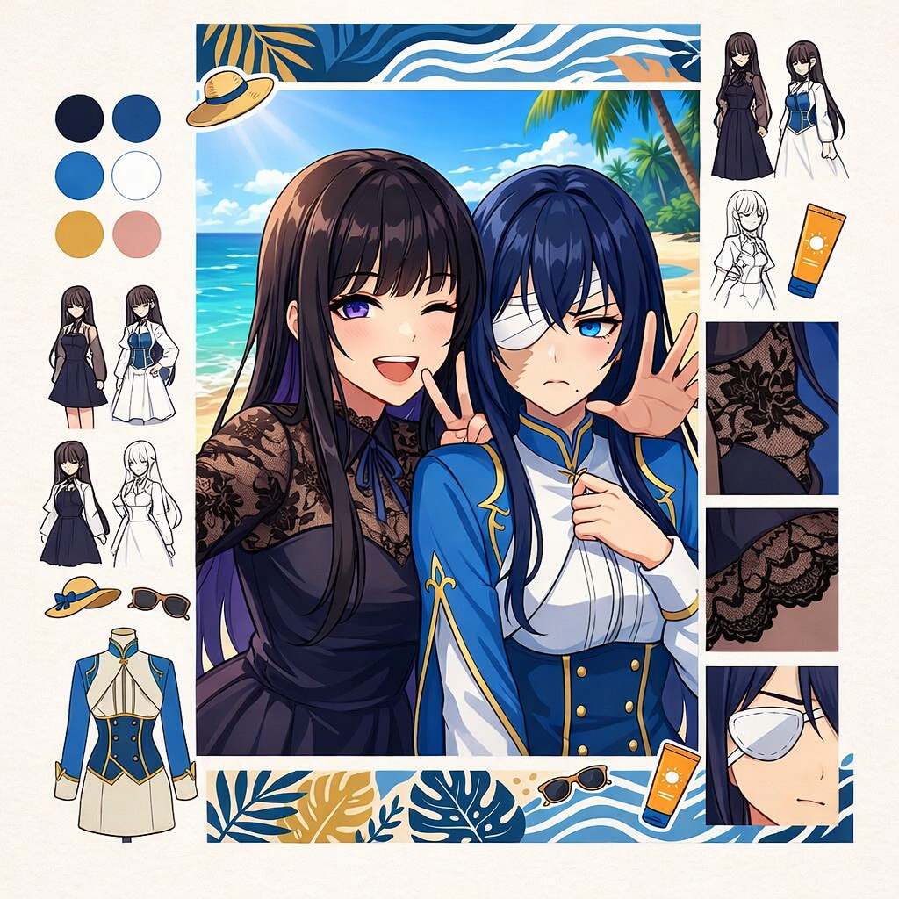

<!doctype html>
<html lang="ja">
<head>
  <meta charset="UTF-8" />
  <!-- Google tag (gtag.js) -->
  <script async src="https://www.googletagmanager.com/gtag/js?id=G-NNPH1HB9GD"></script>
  <script>
    window.dataLayer = window.dataLayer || [];
    function gtag(){dataLayer.push(arguments);}
    gtag('js', new Date());

    if (location.hostname === 'soshuko.github.io') {
    gtag('config', 'G-NNPH1HB9GD');
  }
  </script>
  <meta name="google-site-verification" content="02NYtmYvbsFZ1hgdCzjDVNtUwTkSz77iIYg7C1UBffs" />
  <meta name="viewport" content="width=device-width, initial-scale=1.0" />
    <meta name="description" content="縲・00繝｡繝ｼ繝医Ν蜈医€∬ｻ｢蜷代☆繧句・蠑・Boy-Meets-Knife縲・00蟷ｴ縺ｫ貂｡繧玖｡€縺ｨ驕句多縺ｮ迚ｩ隱槭€・ />
  <link rel="canonical" href="https://soshuko.github.io/RePubReader/index.html" />
  <meta property="og:type" content="website" />
  <meta property="og:url" content="https://soshuko.github.io/RePubReader/index.html" />
  <meta property="og:title" content="縲主・蜥悟嵜迚ｩ隱槭€上し繝ｼ繧ｬ | 蜈ｬ蠑城夢隕ｧ繧ｵ繧､繝・ />
  <meta property="og:description" content="縲・00繝｡繝ｼ繝医Ν蜈医€∬ｻ｢蜷代☆繧句・蠑・Boy-Meets-Knife縲・00蟷ｴ縺ｫ貂｡繧玖｡€縺ｨ驕句多縺ｮ迚ｩ隱槭€・ />
  <meta property="og:image" content="./assets/images/霆｢蜷代・讖九・謌ｦ縺・png" />
  <meta name="twitter:card" content="summary_large_image" />
  <meta name="twitter:title" content="縲主・蜥悟嵜迚ｩ隱槭€上し繝ｼ繧ｬ | 蜈ｬ蠑城夢隕ｧ繧ｵ繧､繝・ />
  <meta name="twitter:description" content="縲・00繝｡繝ｼ繝医Ν蜈医€∬ｻ｢蜷代☆繧句・蠑・Boy-Meets-Knife縲・00蟷ｴ縺ｫ貂｡繧玖｡€縺ｨ驕句多縺ｮ迚ｩ隱槭€・ />
  <meta name="twitter:image" content="./assets/images/霆｢蜷代・讖九・謌ｦ縺・png" />
  <title>縲主・蜥悟嵜迚ｩ隱槭€上し繝ｼ繧ｬ | 蜈ｬ蠑城夢隕ｧ繧ｵ繧､繝・/title>
  <link rel="icon" type="image/png" sizes="48x48" href="https://soshuko.github.io/RePubReader/assets/images/繧｢繧､繧ｳ繝ｳ.png" />
  <link rel="apple-touch-icon" href="https://soshuko.github.io/RePubReader/assets/images/繧｢繧､繧ｳ繝ｳ.png" />
  <meta name="theme-color" content="#1f5c69" />
  <style>
    :root {
      --bg: #f4efe5;
      --panel: #fffdfa;
      --ink: #1f1b16;
      --muted: #74695c;
      --line: #d4c9b8;
      --accent: #9f2a2a;
      --accent-2: #1f5c69;
      --theme-choice: linear-gradient(transparent 60%, rgba(255, 215, 0, .45) 60%);
      --theme-dialogue: linear-gradient(transparent 60%, rgba(135, 206, 250, .45) 60%);
    }
    * { box-sizing: border-box; }
    html[data-theme="dark"] {
      --bg: #1a1713;
      --bg-spot: #3d3326;
      --panel: #25211b;
      --ink: #f1e9de;
      --muted: #c0b19d;
      --line: #4a3f33;
      --accent: #e08b8b;
      --accent-2: #8ad7f2;
    }
    body {
      margin: 0;
      color: var(--ink);
      background: radial-gradient(circle at 80% -20%, var(--bg-spot), transparent 40%), var(--bg);
      font-family: "Hiragino Mincho ProN", "Yu Mincho", "BIZ UDPMincho", serif;
    }
    .layout {
      display: grid;
      grid-template-columns: 320px 1fr;
      min-height: 100vh;
      height: 100vh;
      overflow: hidden;
    }
    .sidebar-toggle {
      display: none;
      border: 1px solid var(--line);
      border-radius: 10px;
      background: var(--panel);
      color: var(--ink);
      padding: 0;
      font: inherit;
      cursor: pointer;
      align-items: center;
      justify-content: center;
      line-height: 1;
    }
    .hamburger-icon {
      display: inline-block;
      font-size: 1.38rem;
      width: 1.38rem;
      text-align: center;
    }
    .sr-only {
      position: absolute;
      width: 1px;
      height: 1px;
      padding: 0;
      margin: -1px;
      overflow: hidden;
      clip: rect(0, 0, 0, 0);
      white-space: nowrap;
      border: 0;
    }
    .sidebar-content { display: block; }
    .sidebar-backdrop {
      display: none;
      position: fixed;
      inset: 0;
      border: 0;
      background: rgba(0,0,0,.45);
      z-index: 180;
    }
    .sidebar-backdrop.show { display: block; }
    aside {
      border-right: 1px solid var(--line);
      background: linear-gradient(180deg, var(--panel), var(--bg));
      padding: 16px;
      height: 100vh;
      overflow: auto;
    }
    main {
      padding: 24px clamp(16px, 3vw, 42px);
      height: 100vh;
      overflow: auto;
    }
    h1 {
      margin: 0 0 8px;
      font-size: 1.2rem;
      letter-spacing: .08em;
    }
    .meta {
      color: var(--muted);
      font-size: .82rem;
      line-height: 1.5;
      margin-bottom: 16px;
    }
    nav a {
      display: inline-block;
      margin-right: 9px;
      color: var(--accent-2);
      text-decoration: none;
      border-bottom: 1px dotted currentColor;
    }
    nav a:visited { color: var(--accent-2); }
    .site-groups {
      margin-top: 10px;
      border: 1px solid var(--line);
      border-radius: 10px;
      background: var(--panel);
      overflow: hidden;
    }
    .site-groups details + details { border-top: 1px solid var(--line); }
    .site-groups summary {
      cursor: pointer;
      list-style: none;
      display: flex;
      align-items: center;
      gap: 8px;
      padding: 8px 10px;
      font-size: .9rem;
      font-weight: 700;
      color: var(--ink);
    }
    .site-groups summary::-webkit-details-marker { display: none; }
    .site-icon {
      width: 54px;
      height: 54px;
      object-fit: contain;
      flex: 0 0 54px;
    }
    .group-links {
      display: grid;
      gap: 6px;
      padding: 0 10px 10px;
    }
    .group-links a {
      display: block;
      color: var(--accent-2);
      text-decoration: none;
      border: 1px solid var(--line);
      border-radius: 7px;
      padding: 6px 8px;
      font-size: .85rem;
      background: var(--panel);
    }
    .group-links a:hover { background: #f7f1e7; }
    .toggle-row {
      display: flex;
      gap: 8px;
      flex-wrap: wrap;
      margin-top: 10px;
    }
    .theme-toggle {
      margin-top: 10px;
      border: 1px solid var(--line);
      border-radius: 999px;
      background: var(--panel);
      color: var(--ink);
      padding: 6px 12px;
      cursor: pointer;
      font-family: inherit;
      font-size: .86rem;
    }
    .lang-buttons {
      display: inline-flex;
      gap: 6px;
      flex-wrap: wrap;
      margin-top: 10px;
    }
    .lang-btn[aria-pressed="true"] {
      background: var(--accent);
      color: #fff;
      border-color: var(--accent);
    }
    .read-feature-toggle {
      margin-top: 8px;
      font-size: .82rem;
      color: var(--muted);
    }
    .read-feature-toggle label {
      display: inline-flex;
      align-items: center;
      gap: 6px;
      cursor: pointer;
      user-select: none;
    }
    .read-feature-toggle input { margin: 0; }
    .tree details {
      margin-bottom: 8px;
      border: 1px solid var(--line);
      border-radius: 10px;
      background: var(--panel);
      overflow: hidden;
    }
    .tree summary {
      cursor: pointer;
      padding: 8px;
      font-weight: 700;
      background: var(--panel);
    }
    .section {
      padding: 8px 10px;
      border-top: 1px solid var(--line);
    }
    .section-title {
      font-size: .9rem;
      color: var(--muted);
      margin: 0 0 8px;
    }
    .episode-btn {
      width: 100%;
      text-align: left;
      border: 1px solid var(--line);
      border-radius: 8px;
      padding: 7px 9px;
      margin: 0 0 6px;
      background: var(--panel);
      color: var(--ink);
      cursor: pointer;
      font-family: inherit;
    }
    .episode-btn.active {
      border-color: var(--accent);
      box-shadow: 0 0 0 2px rgba(159, 42, 42, .1);
      background: #fff7f5;
    }
    .episode-btn.read-done {
      border-color: #8b7d66;
      position: relative;
    }
    .episode-btn.read-done::after {
      content: "笨・;
      position: absolute;
      right: 9px;
      top: 50%;
      transform: translateY(-50%);
      font-size: .88rem;
      color: #2b7a2b;
      opacity: .95;
      font-weight: 700;
      pointer-events: none;
    }
    .intro {
      border: 1px solid var(--line);
      border-radius: 14px;
      width: fit-content;
      background: var(--panel);
      padding: clamp(16px, 2vw, 24px);
      line-height: 1.95;
    }
    .title-hero-box {
      margin: 0 auto 14px;
      border: 1px solid #c49755;
      border-radius: 14px;
      width: fit-content;
      padding: 8px;
      background: linear-gradient(180deg, #f6e3bf 0%, #efd4a8 100%);
      box-shadow: inset 0 0 0 1px rgba(255,255,255,.26);
    }
    .title-hero-img {
      display: block;
      width: min(100%, 176px);
      margin: 0 auto;
      border-radius: 10px;
      border: 1px solid #9b6a22;
      background: #8a5a14;
    }

    .intro h2 {
      margin: 0 0 8px;
      font-size: 1.35rem;
      color: var(--accent);
    }
    .intro h3 {
      margin: 0 0 8px;
      font-size: 1.1rem;
      color: var(--accent-2);
    }
    .catch {
      margin: 0 0 10px;
      font-weight: 700;
      letter-spacing: .04em;
    }
    .intro p { margin: 0; white-space: pre-line; }
    .intro a {
      color: var(--accent-2);
      text-decoration: underline;
      text-underline-offset: .18em;
    }
    .intro a:visited { color: var(--accent-2); }
    .intro-media-wrap {
      display: grid;
      grid-template-columns: minmax(220px, 360px) 1fr;
      gap: 14px;
      align-items: start;
    }
    .intro-media {
      margin: 0;
      width: 320px;
      max-width: 100%;
      aspect-ratio: 1 / 1;
    }
    .intro-media-stack {
      grid-template-columns: 1fr;
      gap: 10px;
    }
    .intro-media-stack .intro-media {
      width: min(520px, 100%);
    }
    .intro-media img {
      width: 100%;
      height: 100%;
      display: block;
      object-fit: cover;
      border-radius: 12px;
      border: 1px solid var(--line);
      background: #f1ece4;
    }
    .rec-block { margin-top: 14px; }
    .rec-title {
      margin: 0 0 8px;
      font-weight: 700;
      color: var(--accent);
      font-size: .98rem;
    }
    .rec-grid {
      display: grid;
      gap: 10px;
    }
    .rec-item {
      border: 1px solid var(--line);
      border-radius: 10px;
      padding: 8px;
      background: color-mix(in srgb, var(--panel) 86%, #fff 14%);
    }
    .rec-item::after {
      content: "";
      display: block;
      clear: both;
    }
    .rec-item h4 {
      margin: 0 0 8px;
      font-size: .98rem;
      color: var(--accent-2);
      line-height: 1.45;
    }
    .rec-figure {
      margin: 0 14px 8px 0;
      width: min(360px, 44%);
      max-width: 360px;
      aspect-ratio: 4 / 3;
      border-radius: 10px;
      overflow: hidden;
      border: 1px solid var(--line);
      background: #f2ece3;
      float: left;
    }
    .rec-figure img {
      width: 100%;
      height: 100%;
      object-fit: cover;
      display: block;
    }
    .rec-item p {
      margin: 0;
      white-space: pre-line;
      line-height: 1.82;
      font-size: .93rem;
    }
    .rec-actions {
      margin-top: 8px;
      clear: both;
    }


    @media (max-width: 900px) {
      .rec-figure {
        float: none;
        width: 100%;
        max-width: 100%;
        margin: 0 0 8px;
        aspect-ratio: 1 / 1;
      }
    }
    .share-links {
      margin-top: 10px;
      display: flex;
      flex-wrap: wrap;
      gap: 8px;
    }
    .share-link {
      display: inline-block;
      padding: 6px 10px;
      border: 1px solid var(--line);
      border-radius: 8px;
      text-decoration: none;
      color: var(--accent-2);
      background: var(--panel);
      font-size: .9rem;
      font-family: inherit;
      cursor: pointer;
    }
    .share-link:hover { background: #f7f1e7; }
    .inline-open-link {
      display: inline-block;
      padding: 8px 12px;
      border: 1px solid var(--line);
      border-radius: 8px;
      background: var(--panel);
      text-decoration: none;
      color: var(--accent-2);
    }
    .share-modal {
      position: fixed;
      inset: 0;
      display: none;
      align-items: center;
      justify-content: center;
      background: rgba(0,0,0,.38);
      z-index: 120;
      padding: 12px;
    }
    .share-modal.open { display: flex; }
    .share-box {
      width: min(460px, 96vw);
      border: 1px solid var(--line);
      border-radius: 12px;
      background: var(--panel);
      padding: 14px;
    }
    .share-box h4 { margin: 0 0 10px; font-size: 1rem; }
    .share-actions { display: flex; flex-wrap: wrap; gap: 8px; }
    .share-actions button {
      border: 1px solid var(--line);
      border-radius: 8px;
      background: var(--panel);
      padding: 7px 10px;
      cursor: pointer;
      font: inherit;
    }
    .share-note { margin-top: 10px; color: var(--muted); font-size: .85rem; }
    .article-wrap { display: none; }
    .article-head {
      padding-bottom: 12px;
      border-bottom: 1px solid var(--line);
      margin-bottom: 18px;
      display: flex;
      justify-content: space-between;
      gap: 10px;
      align-items: end;
      flex-wrap: wrap;
    }
    .article-head h2 { margin: 0 0 6px; font-size: 1.4rem; }
    .article-head .trail { color: var(--muted); font-size: .92rem; }
    .back-btn {
      border: 1px solid var(--line);
      border-radius: 8px;
      padding: 6px 10px;
      background: var(--panel);
      cursor: pointer;
      font-family: inherit;
    }
    .article-actions {
      display: flex;
      gap: 8px;
      flex-wrap: wrap;
      justify-content: flex-end;
    }
    .share-ep-btn {
      border: 1px solid var(--line);
      border-radius: 8px;
      padding: 6px 10px;
      background: var(--panel);
      color: var(--ink);
      cursor: pointer;
      font-family: inherit;
    }    .article {
      background: var(--panel);
      border: 1px solid var(--line);
      border-radius: 14px;
      width: fit-content;
      padding: clamp(16px, 2vw, 26px);
      line-height: 1.95;
    }
    .article p { margin: 0 0 1em; }
    .klv-line { margin: 0 0 1.2em; }
    .klv-original { font-size: 1.03em; font-weight: 600; letter-spacing: .01em; }
    .gloss-wrap { margin-top: .55em; border: 1px solid var(--line); border-radius: 8px; background: color-mix(in srgb, var(--panel) 92%, var(--accent-2) 8%); padding: 8px 10px; display: none; }
    .gloss-wrap.show { display: block; }
    .gloss-free { margin: 6px 0 0; color: var(--muted); font-size: .9em; }
    .gloss-table { width: 100%; border-collapse: collapse; margin-top: 6px; font-size: .88em; }
    .gloss-table th, .gloss-table td { border: 1px solid var(--line); padding: 3px 6px; text-align: left; vertical-align: top; }
    .theme-choice { background: var(--theme-choice); }
    .theme-dialogue { background: var(--theme-dialogue); }
    .char-ref, .term-ref {
      color: var(--accent-2);
      text-decoration: underline;
      text-underline-offset: .18em;
    }
    .char-ref:visited, .term-ref:visited { color: var(--accent-2); }
    .article a { color: var(--accent-2); }
    .article a:visited { color: var(--accent-2); }
    .term-preview {
      position: fixed;
      z-index: 500;
      display: none;
      max-width: min(320px, calc(100vw - 24px));
      border: 1px solid var(--line);
      border-radius: 10px;
      background: var(--panel);
      color: var(--ink);
      box-shadow: 0 10px 24px rgba(0, 0, 0, .2);
      padding: 10px 12px;
      pointer-events: none;
      line-height: 1.6;
      font-size: .85rem;
    }
    .term-preview.show { display: block; }
    .term-preview-title {
      margin: 0 0 3px;
      font-weight: 700;
      color: var(--accent);
    }
    .term-preview-text {
      margin: 0;
      color: var(--ink);
    }
    .comments-wrap {
      margin-top: 18px;
      border: 1px solid var(--line);
      border-radius: 14px;
      width: fit-content;
      background: var(--panel);
      padding: 14px;
    }
    .comments-wrap h3 {
      margin: 0 0 8px;
      font-size: 1.05rem;
      color: var(--accent-2);
    }
    .comments-note {
      margin: 0 0 10px;
      color: var(--muted);
      font-size: .9rem;
    }    .site-footer {
      margin-top: 18px;
      padding: 10px 12px;
      border-top: 1px solid var(--line);
      color: var(--muted);
      font-size: .78rem;
      line-height: 1.6;
    }
    .site-footer a {
      color: var(--accent-2);
      text-decoration: none;
      border-bottom: 1px dotted currentColor;
    }
    .counter-note {
      margin-top: 6px;
      color: var(--muted);
      font-size: .78rem;
    }    .empty {
      color: var(--muted);
      border: 1px dashed var(--line);
      border-radius: 10px;
      padding: 14px;
      background: var(--panel);
    }
    html[data-theme="dark"] .group-links a:hover,
    html[data-theme="dark"] .share-link:hover {
      background: #2b3b41;
      color: #b9f2ff;
    }
    html[data-theme="dark"] .article a,
    html[data-theme="dark"] .intro a,
    html[data-theme="dark"] .char-ref,
    html[data-theme="dark"] .term-ref,
    html[data-theme="dark"] nav a,
    html[data-theme="dark"] .site-footer a {
      color: #9fe8ff;
    }
    html[data-theme="dark"] .episode-btn.active {
      background: #3a2b2b;
      border-color: #e08b8b;
    }
    html[data-theme="dark"] input,
    html[data-theme="dark"] select,
    html[data-theme="dark"] .theme-toggle,
    html[data-theme="dark"] .back-btn,
    html[data-theme="dark"] .share-ep-btn,
    html[data-theme="dark"] .share-actions button,
    html[data-theme="dark"] .inline-open-link {
      background: #2a241d;
      color: #9fe8ff;
      border-color: var(--line);
    }
    html[data-theme="dark"] .term-preview {
      background: #2a241d;
      color: #f8f1e4;
      border-color: #5f4f3b;
      box-shadow: 0 12px 28px rgba(0, 0, 0, .45);
    }
    html[data-theme="dark"] .term-preview-title { color: #ffd7c4; }
    @media (max-width: 880px) {
      .layout {
        grid-template-columns: 1fr;
        height: auto;
        overflow: visible;
      }
      aside {
        position: fixed;
        top: 0;
        left: 0;
        bottom: 0;
        width: min(88vw, 340px);
        border-right: 1px solid var(--line);
        border-bottom: none;
        padding: 8px;
        max-height: none;
        transform: translateX(-105%);
        transition: transform .22s ease;
        z-index: 200;
        box-shadow: 0 10px 28px rgba(0,0,0,.35);
      }
      #sidebar.open { transform: translateX(0); }
      .sidebar-toggle {
        display: inline-flex;
        position: fixed;
        left: 12px;
        top: 10px;
        width: 40px;
        height: 40px;
        margin: 0;
        z-index: 220;
        border-radius: 10px;
      }
      .sidebar-content { display: block; }
      main {
        height: auto;
        overflow: visible;
        padding-top: 62px;
      }
      .intro-media-wrap { grid-template-columns: 1fr; }
      .intro-media { width: 100%; }
    }
  </style>
  <script type="application/ld+json">
  {
    "@context": "https://schema.org",
    "@graph": [
      {
        "@type": "WebSite",
        "name": "縲主・蜥悟嵜迚ｩ隱槭€上し繝ｼ繧ｬ",
        "url": "https://soshuko.github.io/RePubReader/index.html",
        "inLanguage": "ja"
      },
      {
        "@type": "Organization",
        "name": "RePubS",
        "url": "https://soshuko.github.io/RePubReader/index.html",
        "logo": "https://soshuko.github.io/RePubReader/assets/images/繧｢繧､繧ｳ繝ｳ.png"
      },
      {
        "@type": "SiteNavigationElement",
        "name": "繧ｫ繝ｩ繝舌Ν隱樊ｦりｦ√・譁・ｳ戊ｧ｣隱ｬ",
        "url": "https://soshuko.github.io/RePubReader/%E8%A8%80%E8%AA%9E/karabar-overview.html"
      },
      {
        "@type": "SiteNavigationElement",
        "name": "繧ｫ繝ｩ繝吶う 驩・％繝ｪ繧｢繝ｫ繧ｿ繧､繝繝槭ャ繝・,
        "url": "https://soshuko.github.io/RePubReader/%E5%9C%B0%E7%90%86/realtimemap.html"
      },
      {
        "@type": "CreativeWorkSeries",
        "name": "縲主・蜥悟嵜迚ｩ隱槭€上し繝ｼ繧ｬ",
        "url": "https://soshuko.github.io/RePubReader/index.html",
        "workExample": [
          {"@type":"CreativeWork","name":"繧ｫ繝ｩ繝舌ぃ繧ｿ繝ｳ蜈ｱ蜥悟嵜迚ｩ隱・,"url":"/share-karabatan.html"},
          {"@type":"CreativeWork","name":"繝上・繝ｭ繝斐ヮ繝ｳ蜈ｱ蜥悟嵜迚ｩ隱・,"url":"/share-haropinon.html"},
          {"@type":"CreativeWork","name":"繝悶ャ繧ｯ繧ｭ繝ｼ繝代・","url":"/share-bookkeeper.html"}
        ]
      }
    ]
  }
  </script>
</head>
<body>
  <div class="layout">
    <button id="sidebarToggle" class="sidebar-toggle" type="button" aria-expanded="false" aria-controls="sidebarContent" aria-label="繝｡繝九Η繝ｼ繧帝幕縺・><span class="hamburger-icon" aria-hidden="true">笘ｰ</span><span class="sr-only">繝｡繝九Η繝ｼ</span></button>
    <aside id="sidebar">
      <div id="sidebarContent" class="sidebar-content">
      <h1 id="siteTitle">縲主・蜥悟嵜迚ｩ隱槭€上し繝ｼ繧ｬ</h1>
      <div id="siteMeta" class="meta">迚ｩ隱樊悽邱ｨ繝薙Η繝ｼ繧｢</div>
      <nav>
        <a id="navTop" href="index.html">繝医ャ繝励・譛ｬ邱ｨ</a>
        <a id="navChars" href="./characters.html">逋ｻ蝣ｴ莠ｺ迚ｩ霎槫・</a>
        <a id="navGloss" href="./glossary.html">逕ｨ隱櫁ｾ槫・</a>
        <a id="navAudio" href="./audiocommentary.html">繧ｪ繝ｼ繝・ぅ繧ｪ繧ｳ繝｡繝ｳ繧ｿ繝ｪ</a>
        <a id="navDiary" href="./diary.html">蝓ｷ遲・鹸</a>
      </nav>      <div class="site-groups" aria-label="豢ｾ逕溘し繧､繝・>
        <details>
          <summary>蝨ｰ逅・/summary>
          <div class="group-links">
            <a href="./蝨ｰ逅・geo.html">繧ｫ繝ｩ繝吶う蝨ｰ逅・い繝ｼ繧ｫ繧､繝・/a>
            <a href="./蝨ｰ逅・trainmap.html">繧ｫ繝ｩ繝吶う邱丞粋荵玲鋤譯亥・</a>
            <a href="./蝨ｰ逅・realtimemap.html">繧ｫ繝ｩ繝吶う 驩・％繝ｪ繧｢繝ｫ繧ｿ繧､繝繝槭ャ繝・/a>
          </div>
        </details>
        <details>
          <summary>險€隱・/summary>
          <div class="group-links">
            <a href="./險€隱・karabar-overview.html">繧ｫ繝ｩ繝舌Ν隱樊ｦりｦ√・譁・ｳ戊ｧ｣隱ｬ</a>
            <a href="./險€隱・fullgrammar.html">繧ｫ繝ｩ繝舌Ν隱・譁・ｳ慕ｷ剰ｦｧ</a>
            <a href="./險€隱・langdictionary.html">繧ｫ繝ｩ繝舌Ν隱槭が繝ｳ繝ｩ繧､繝ｳ霎樊嶌</a>
          </div>
        </details>
        <details>
          <summary>隕ｳ蜈・/summary>
          <div class="group-links">
            <a href="./隕ｳ蜈・visit.html">繧ｫ繝ｩ繝吶う隕ｳ蜈牙ｱ€</a>
          </div>
        </details>
        <details>
          <summary>縺昴・莉・/summary>
          <div class="group-links">
            <a href="./縺昴・莉・visa-top.html">繝輔ぃ繧ｹ繝医ン繧ｶ逕ｳ隲・/a>
            <a href="./Taswar/index.html">Taswar</a>
          </div>
        </details>
      </div>
      <div class="toggle-row">
        <button id="themeToggle" class="theme-toggle" type="button">繝€繝ｼ繧ｯ繝｢繝ｼ繝・/button>
        <div class="lang-buttons" role="group" aria-label="Language selector">
          <button id="langJa" class="theme-toggle lang-btn" type="button" data-lang="ja">&#26085;&#26412;&#35486;</button>
          <button id="langEn" class="theme-toggle lang-btn" type="button" data-lang="en">English</button>
          <button id="langKa" class="theme-toggle lang-btn" type="button" data-lang="ka">Georgian</button>
          <button id="langKlv" class="theme-toggle lang-btn" type="button" data-lang="klv">繧ｫ繝ｩ繝舌Ν隱・/button>
        </div>
      </div>
      <div class="read-feature-toggle">
        <label for="readFeatureToggle"><input id="readFeatureToggle" type="checkbox" checked>譌｢隱ｭ讖溯・繧偵が繝ｳ縺ｫ縺吶ｋ</label>
      </div>
      <hr />
      <div id="tree" class="tree" aria-label="逶ｮ谺｡"></div>
      </div>
    </aside>
    <button id="sidebarBackdrop" class="sidebar-backdrop" type="button" aria-label="繝｡繝九Η繝ｼ繧帝哩縺倥ｋ"></button>
    <main>
      <section id="topPage" class="top-page">
        <article class="intro">
          <div class="title-hero-box">
            
          </div>
          <h2>縲主・蜥悟嵜迚ｩ隱槭€上し繝ｼ繧ｬ</h2>
          <p class="catch">谺｡縺ｮ100蟷ｴ繧ゅ€√◎縺ｮ谺｡繧・/p>
          <p>譫ｶ遨ｺ縺ｮ蝗ｽ螳ｶ縲後き繝ｩ繝吶う謨吝ｰ主嵜縲阪→縲後ワ繝ｼ繝ｭ繝斐ヮ繝ｳ蜈ｱ蜥悟嵜縲阪↑縺ｩ繧定・蜿ｰ縺ｫ縲∽ｸ紋ｻ｣縺ｨ蝗ｽ蠅・ｒ雜・∴縺ｦ邏｡縺後ｌ繧句｣ｮ螟ｧ縺ｪ鄒､蜒丞括縲・
逅・Φ縺ｮ蝗ｽ螳ｶ繧定ｿｽ縺・ｱゅａ縲∝殴・医ョ繝･繝ｼ繝ｬ繧､・峨→陦€縺ｧ豁ｴ蜿ｲ繧貞・繧頑挙縺・◆轤ｺ謾ｿ閠・◆縺｡縲ゅ◎縺ｮ豁ｪ縺ｪ縲悟ｹｸ縺帙€阪・螳夂ｾｩ縺ｫ謚励＞縲√≠繧九＞縺ｯ鄙ｻ蠑・＆繧後↑縺後ｉ繧ゅ€∬・蛻・◆縺｡縺ｮ譛ｪ譚･縺ｨ譌･蟶ｸ繧呈雫縺ｿ蜿悶ｍ縺・→縺吶ｋ闍･閠・◆縺｡縲・
縲碁∈謚槭€阪→縺・≧蜷阪・逞帙∩繧剃ｼｴ縺・ｱｺ譁ｭ縺ｨ縲√€瑚ｩｱ縺怜粋縺・€阪→縺・≧蜷阪・蟇ｾ隧ｱ縺ｫ繧医ｋ隱ｿ蜥後€ら嶌蜈九☆繧倶ｺ後▽縺ｮ逅・ｿｵ繧定ｻｸ縺ｫ縲∵帆豐ｻ縲∝ｮ玲蕗縲√・繝輔ぅ繧｢縲∝ｭｦ逕滄°蜍輔↑縺ｩ縲√≠繧峨ｆ繧矩匆隰€縺ｨ諠ｳ縺・′莠､骭ｯ縺吶ｋ縲∽ｸ€螟ｧ繝偵せ繝医Μ繧ｫ繝ｫ繝ｻ繧ｨ繝ｳ繧ｿ繝ｼ繝・う繝ｳ繝｡繝ｳ繝医€・/p>
          <p style="margin-top:10px;">菴懷刀繧ｯ繧､繝・け繝ｪ繝ｳ繧ｯ: <a href="#work-karabatan">繧ｫ繝ｩ繝舌ぃ繧ｿ繝ｳ蜈ｱ蜥悟嵜迚ｩ隱・/a> / <a href="#work-haropinon">繝上・繝ｭ繝斐ヮ繝ｳ蜈ｱ蜥悟嵜迚ｩ隱・/a> / <a href="#work-bookkeeper">繝悶ャ繧ｯ繧ｭ繝ｼ繝代・</a> / <a href="./characters.html">逋ｻ蝣ｴ莠ｺ迚ｩ霎槫・</a> / <a href="./glossary.html">逕ｨ隱櫁ｾ槫・</a> / <a href="./audiocommentary.html">繧ｪ繝ｼ繝・ぅ繧ｪ繧ｳ繝｡繝ｳ繧ｿ繝ｪ</a> / <a href="./diary.html">蝓ｷ遲・鹸</a> / <a href="./險€隱・karabar-overview.html">繧ｫ繝ｩ繝舌Ν隱樊ｦりｦ√・譁・ｳ戊ｧ｣隱ｬ</a>
            <a href="./險€隱・fullgrammar.html">繧ｫ繝ｩ繝舌Ν隱・譁・ｳ慕ｷ剰ｦｧ</a> / <a href="./蝨ｰ逅・realtimemap.html">繧ｫ繝ｩ繝吶う 驩・％繝ｪ繧｢繝ｫ繧ｿ繧､繝繝槭ャ繝・/a></p>
        </article>

        <article class="intro">
          <h3 id="work-karabatan">繧ｫ繝ｩ繝舌ぃ繧ｿ繝ｳ蜈ｱ蜥悟嵜迚ｩ隱・/h3>
          <p class="catch">200繝｡繝ｼ繝医Ν蜈医€∬ｻ｢蜷代☆繧句・蠑・/p>
          <div class="intro-media-wrap intro-media-stack">
            <figure class="intro-media"></figure>
            <div>
              <p>19荳也ｴ€譛ｫ縺九ｉ20荳也ｴ€蠕悟濠縺ｫ縺九￠縺ｦ縺ｮ繧ｫ繝ｩ繝舌ぃ繧ｿ繝ｳ蜈ｱ蜥悟嵜・亥ｾ後・繧ｫ繝ｩ繝吶う謨吝ｰ主嵜・峨ｒ闊槫床縺ｫ縺励◆縲∬｡€縺ｨ髯ｰ隰€縺ｮ蟒ｺ蝗ｽ蜿ｲ縲・
縲悟､ｩ蜻ｽ縺ｮ蟄舌€阪→縺励※逕溘∪繧後€∝・蜥御ｸｻ鄒ｩ縺ｮ豢苓┻縺九ｉ謚懊￠蜃ｺ縺励※邨ｶ蟇ｾ逧・↑蜉帙〒謨吝ｰ主嵜繧貞ｻｺ蝗ｽ縺励◆蛻昜ｻ｣繝ｻ繝代Λ繧ｸ繧ｧ繧､縲ゅ◎縺ｮ迢ｬ陬√→迢よｰ励↓遶九■蜷代°縺・€∝ｯｾ隧ｱ縺ｫ繧医ｋ譛ｪ譚･繧呈ｨ｡邏｢縺励◆繝ｩ繧ｫ繝ｳ繝ｻ繝ｩ繧､繧・ン繝ｩ繧､繝ｳ繝ｻ繧｢繧ｫ繝阪う縺溘■縲ゅ◎縺励※縲∵・縺吶ｋ閠・・縺溘ａ縺ｫ閾ｪ繧蛾裸繧呈球縺・€∝嵜繧貞ｰ弱％縺・→縺励◆繝ｩ繝・Φ繝ｻ繧ｿ繝阪う縺ｨ繧ｷ繝｣繧ｦ繝ｳ繝ｻ繧｢繧ｫ繧ｦ縲・
轤ｺ謾ｿ閠・◆縺｡縺梧升繧九€檎巨濶ｲ縺ｮ繝翫う繝輔€阪・隱ｰ縺ｮ陦€繧貞精縺・€√←縺薙∈蜷代°縺・・縺九€ょ凍縺励￥繧らｾ弱＠縺・€∝・莉｣縺九ｉ隨ｬ莠比ｻ｣縺ｫ閾ｳ繧区蕗蟆手・縺溘■縺ｮ諢帶・縺ｨ縲∵･ｵ髯舌・蜑｣謌滂ｼ医ョ繝･繝ｼ繝ｬ繧､・峨・霆瑚ｷ｡繧呈緒縺乗ｭｴ蜿ｲ蜿吩ｺ玖ｩｩ縲・/p>
              <div class="rec-block">
                <p class="rec-title">縺翫☆縺吶ａ菴懷刀</p>
                <div class="rec-grid">
                  <article class="rec-item">
                    <h4>繧｢繧ｫ繧ｦ邱ｨ</h4>
                    <figure class="rec-figure"></figure>
                    <p>遏ｳ豐ｹ雉・ｺ舌′雎雁ｯ後↑繝峨ぇ繝ｩ繝豬ｷ豐ｿ蟯ｸ縺ｮ逕｣豐ｹ蝗ｽ縺瑚・蜿ｰ縲ゅ％縺薙〒縺ｯ縲∝､壹￥縺ｮ蝗ｽ豌代′菫｡莉ｰ縺吶ｋ螳玲蕗縺ｮ譛€鬮俶欠蟆手€・€檎ｬｬ荳€謨吝ｰ手・縲阪→縲∫音讓ｩ髫守ｴ壹〒縺ゅｋ9縺､縺ｮ蜷榊ｮｶ縲御ｹ晄ｰ乗酪縲阪′蝗ｽ縺ｮ螳滓ｨｩ繧呈升縺｣縺ｦ縺・ｋ縲ゅ＆繧峨↓縲∵ｭｴ蜿ｲ縺ｮ陬上〒縺ｯ證玲ｮｺ繧・ｫ懷ｱ繧呈球縺・ｧ伜ｯ・ｵ・ｹ斐€御ｹ晏慍縲阪ｄ縲∵€晄Φ繧貞殴謚€縺ｫ霎ｼ繧√ｋ莨晉ｵｱ逧・↑繝翫う繝戊｡薙€後ョ繝･繝ｼ繝ｬ繧､縲阪ｂ證苓ｺ阪＠縺ｦ縺・ｋ縲・

1920蟷ｴ莉｣縲√€悟､ｩ蜻ｽ縺ｮ蟄舌€阪→蜻ｼ縺ｰ繧後ｋ繧ｷ繝｣繧ｦ繝ｳ繝ｻ繝代Λ繧ｸ繧ｧ繧､縺ｯ縲∬ｦｪ蜿九ｒ蛟偵＠縺ｦ謾ｿ讓ｩ繧呈詞謠｡縺励€√き繝ｩ繝舌ぃ繧ｿ繝ｳ蜈ｱ蜥悟嵜繧堤峡陬∝嵜螳ｶ縲後き繝ｩ繝吶う謨吝ｰ主嵜縲阪∈縺ｨ螟峨∴縺溘€ゅ＠縺九＠縺昴・蠕後€∝ｦｻ縺ｨ蟇・°縺ｫ閧ｲ縺ｦ繧峨ｌ縺ｦ縺・◆螳溘・諱ｯ蟄舌す繝｣繧ｦ繝ｳ繝ｻ繧｢繝､縺ｮ陬丞・繧翫↓繧医ｊ證玲ｮｺ縺輔ｌ繧九€・

繧｢繝､縺ｯ縺輔ｉ縺ｫ縲∬・蛻・・蜿悟ｭ舌・蜈・〒縺ゅｋ譛ｬ迚ｩ縺ｮ繝薙Λ繧､繝ｳ繝ｻ繧｢繧ｫ繝阪う縺ｮ蜷阪ｒ鬨吶ｊ縲∝嵜縺ｮ鬆らせ縺ｫ遶九▲縺ｦ蠑ｷ讓ｩ逧・↑謾ｯ驟阪ｒ陦後≧縲ゆｸ€譁ｹ縺ｧ縲∵悽迚ｩ縺ｮ繧｢繧ｫ繝阪う縺ｯ螳ｶ譌上ｒ螂ｪ繧上ｌ縲∝ｾｩ隶舌ｒ隱薙≧縲ゅ◎縺励※螟ｩ謇榊殴螢ｫ繝ｩ繧ｫ繝ｳ繝ｻ繝ｩ繧､縺ｨ謇九ｒ邨・∩縲∝渚謦・↓荵励ｊ蜃ｺ縺吶€・

1960蟷ｴ莉｣縲∝､ｧ蝗ｽ繧ｦ繧ｩ繝ｼ繝ｫ騾｣驍ｦ縺ｫ繧医ｋ霆堺ｺ倶ｾｵ謾ｻ縺瑚ｿｫ繧倶ｸｭ縲√い繧ｫ繝阪う繝ｻ繧｢繝､繝ｻ繝ｩ繧､縺ｮ荳芽€・↓繧医ｋ豼€縺励＞謌ｦ縺・′郢ｰ繧雁ｺ・￡繧峨ｌ繧九€よ怙邨ら噪縺ｫ繧｢繧ｫ繝阪う縺溘■縺ｯ繧｢繝､繧貞€偵☆縺薙→縺ｫ謌仙粥縺吶ｋ縺後€√◎縺ｮ邨先棡縲√え繧ｩ繝ｼ繝ｫ騾｣驍ｦ縺ｮ謫阪ｊ莠ｺ蠖｢縺ｨ縺ｪ繧狗┌閭ｽ縺ｪ莠ｺ迚ｩ縺梧眠謾ｿ讓ｩ繧呈升繧翫€∝嵜縺ｯ螟門嵜雉・悽縺ｫ謾ｯ驟阪＆繧後※縺励∪縺・€・

縺薙≧縺励※闍ｱ髮・◆縺｡縺ｮ謌ｦ縺・・邨ゅｏ繧翫ｒ霑弱∴繧九€ら函縺肴ｮ九▲縺溘Λ繧､縺ｯ隴ｰ髟ｷ縺ｨ縺励※豌台ｸｻ逧・↑蝗ｽ螳ｶ縺ｮ蜀榊ｻｺ繧堤岼謖・＠縲√い繧ｫ繝阪う縺ｯ霄ｫ蛻・ｒ髫縺励※霎ｺ蠅・・蜿ｸ謨吶→縺ｪ繧雁嵜繧定ｦ句ｮ医ｋ縲よ風繧後◆繧｢繝､縺ｯ霆溽ｦ√＆繧後ｋ縺薙→縺ｫ縺ｪ繧九€・

譎ゆｻ｣縺ｯ1960蟷ｴ莉｣蠕悟濠縺ｸ縲り｡ｰ騾€縺励▽縺､縺ゅｋ謨吝ｰ主嵜縺ｧ縺ｯ縲∽ｹ晄ｰ乗酪縺ｮ隍・尅縺ｪ讓ｩ蜉帑ｺ峨＞縺檎ｶ壹＞縺ｦ縺・ｋ縲ゅ◎繧薙↑荳ｭ縲√い繝､縺ｮ螽倥〒縺ゅｊ縺ｪ縺後ｉ辷ｶ縺ｫ繧らｧ伜ｯ・〒縲檎塙縲阪→縺励※閧ｲ縺ｦ繧峨ｌ縺溘す繝｣繧ｦ繝ｳ繝ｻ繧｢繧ｫ繧ｦ縺後€∵眠縺溘↑譎ゆｻ｣繧定レ雋縺・€・匆隰€縺ｨ螟ｧ蝗ｽ縺ｮ諤晄ヱ縺梧ｸｦ蟾ｻ縺乗帆豐ｻ縺ｨ髣倅ｺ峨・闊槫床縺ｸ縺ｨ雕上∩蜃ｺ縺励※縺・￥縲・/p>
                    <div class="rec-actions"><button class="share-link rec-open" type="button" data-work-key="karabatan" data-section-key="繧｢繧ｫ繧ｦ邱ｨ">譛ｬ邱ｨ繧定ｪｭ繧€</button></div>
                  </article>
                </div>
              </div>              <div class="share-links"><button class="share-link ep1-link" type="button" data-work-key="karabatan">EP1縺九ｉ隱ｭ繧€</button><button class="share-link" type="button" data-share="karabatan">SNS縺ｧ蜈ｱ譛・/button></div>
            </div>
          </div>
        </article>

        <article class="intro">
          <h3 id="work-haropinon">繝上・繝ｭ繝斐ヮ繝ｳ蜈ｱ蜥悟嵜迚ｩ隱・/h3>
          <p class="catch">Boy-Meets-Knife</p>
          <div class="intro-media-wrap intro-media-stack">
            <figure class="intro-media"></figure>
            <div>
              <p>闊槫床縺ｯ1990蟷ｴ莉｣縺ｮ繝上・繝ｭ繝斐ヮ繝ｳ蜈ｱ蜥悟嵜繝ｻ繝倥Μ繧ｨ繝ｳ逶ｴ霓・ｸゅ€ゅ・繝輔ぅ繧｢縲御ｺ泌､ｩ縲阪€・℃豼€豢ｾ蟄ｦ逕溽ｵ・ｹ斐€後・繝ｳ繝・ぃ繝ｫ縲阪€∫ｧ伜ｯ・ｵ千､ｾ縲後ず繝･繝ｼ繝翫・縲阪↑縺ｩ縲√＆縺ｾ縺悶∪縺ｪ邨・ｹ斐・諤晄ヱ縺悟・繧贋ｹｱ繧後ｋ辟｡豕募慍蟶ｯ縺ｧ縲∝ｹｳ蜃｡縺ｪ譌･蟶ｸ繧貞ｮ医ｋ縺溘ａ縺ｫ遶九■荳翫′縺｣縺溯凶閠・◆縺｡縺ｮ迚ｩ隱槭€・
繝倥Μ繧ｨ繝ｳ蝗ｽ遶句､ｧ蟄ｦ縺ｮ蠑ｱ蟆上し繝ｼ繧ｯ繝ｫ縲瑚･ｿ繧｢繝ｫ繝医せ遐皮ｩｶ莨壹€阪↓髮・▲縺溘€∝嵜邀阪ｂ霄ｫ蛻・ｂ繝舌Λ繝舌Λ縺ｪ蟄ｦ逕溘◆縺｡縲ょｽｼ繧峨・縲後ヱ繝ｩ繧ｸ繧ｧ繧､縺ｮ繝翫う繝輔€阪ｒ蟾｡繧矩匆隰€繧・€∝ｼｱ閠・ｒ蛻・ｊ謐ｨ縺ｦ繧狗炊荳榊ｰｽ縺ｪ豕募ｾ九€∵＄繧九∋縺阪え繧､繝ｫ繧ｹ縺ｮ閼・ｨ√↓蟇ｾ縺励€∝女縺醍ｶ吶′繧後◆蜑｣陦薙€∝悸蛟堤噪縺ｪ繝・ぅ繝吶・繝医€√◎縺励※謠ｺ繧九℃縺ｪ縺・暑諠・ｒ豁ｦ蝎ｨ縺ｫ遶九■蜷代°縺｣縺ｦ縺・￥縲・
螟ｧ莠ｺ縺溘■縺ｮ驛ｽ蜷医〒蝮・＆繧後ｋ縺薙→繧呈拠縺ｿ縲√〒縺薙⊂縺薙↑縲悟ｹｸ縺帙€阪ｒ謗ｴ縺ｿ蜿悶ｋ縺溘ａ縺ｮ辭ｱ縺埼搨譏･鄒､蜒丞括縲・/p>
              <div class="rec-block">
                <p class="rec-title">縺翫☆縺吶ａ菴懷刀</p>
                <div class="rec-grid">
                  <article class="rec-item">
                    <h4>繝代Λ繧ｸ繧ｧ繧､縺ｮ繝翫う繝慕ｷｨ</h4>
                    <figure class="rec-figure"></figure>
                    <p>闊槫床縺ｯ縲∬・逕ｱ縺ｨ豺ｷ豐後′蜈･繧頑ｷｷ縺倥ｋ髫｣蝗ｽ縲後ワ繝ｼ繝ｭ繝斐ヮ繝ｳ蜈ｱ蜥悟嵜縲阪€・

縺九▽縺ｦ縲∫浹豐ｹ雉・ｺ舌→螳玲蕗逧・ｨｩ螽√ｒ閭梧勹縺ｫ縲檎ｬｬ荳€謨吝ｰ手・縲阪→荵昴▽縺ｮ蜷榊ｮｶ縲御ｹ晄ｰ乗酪縲阪′謾ｯ驟阪☆繧九€後き繝ｩ繝吶う謨吝ｰ主嵜縲阪〒縺ｯ縲∵囓谿ｺ繝ｻ隲懷ｱ邨・ｹ斐€御ｹ晏慍縲阪→縺昴・鬆らせ縺ｫ遶九▽縲檎區譴溘€阪€√◎縺励※諤晄Φ繧貞・縺ｫ霎ｼ繧√ｋ遏ｭ蜑｣陦薙€後ョ繝･繝ｼ繝ｬ繧､縲阪′陬上〒證苓ｺ阪＠縺ｦ縺・◆縲ょ・莉｣繝代Λ繧ｸ繧ｧ繧､縺ｫ繧医ｋ蟒ｺ蝗ｽ縲∝ｮ溷ｭ舌い繝､縺ｮ邁貞･ｪ縲√◎縺励※譛ｬ迚ｩ縺ｮ繧｢繧ｫ繝阪う縺ｨ螟ｩ謇榊殴螢ｫ繝ｩ繧ｫ繝ｳ繝ｻ繝ｩ繧､繧峨↓繧医ｋ豼€縺励＞謌ｦ縺・ｒ邨後※縲∵凾莉｣縺ｯ1970蟷ｴ莉｣莉･髯阪∈縺ｨ遘ｻ縺｣縺ｦ縺・￥縲・

縺昴・蠕後€√い繝､縺ｮ螽倥す繝｣繧ｦ繝ｳ繝ｻ繧｢繧ｫ繧ｦ縺ｯ縲∵ｨｩ蜉幃利莠峨・縺溘ａ縺ｫ縲檎塙縲阪→縺励※閧ｲ縺ｦ繧峨ｌ縺ｪ縺後ｉ繧ゅ€∵・縺吶ｋ隱螳溘↑髱貞ｹｴ繝ｩ繝・Φ繝ｻ繧ｿ繝阪う繧堤ｬｬ荳€謨吝ｰ手・縺ｫ謐ｮ縺医ｋ縺溘ａ縲∬・繧峨€檎區譴溘€阪→縺ｪ縺｣縺ｦ證苓ｺ阪☆繧九€よ帆謨ｵ繧・團蝗ｽ縺ｮ蟾ｨ螟ｧ迥ｯ鄂ｪ邨・ｹ斐€御ｺ泌､ｩ縲阪ｒ縲∬｡€縺ｫ譟薙∪縺｣縺溘ョ繝･繝ｼ繝ｬ繧､縺ｧ謗帝勁縺励※縺・￥縺ｮ縺ｧ縺ゅｋ縲・

荳€譁ｹ縺ｮ繧ｿ繝阪う縺ｯ縲∫ｾｩ辷ｶ縺ｮ證玲ｮｺ繧・怙諢帙・螯ｻ縺ｮ譏冗擅縺ｨ縺・▲縺滓ご蜉・↓隕玖・繧上ｌ縺ｪ縺後ｉ繧ゅ€∝ｾｩ隶舌↓縺ｯ襍ｰ繧峨↑縺・€よｳ輔→蟇ｾ隧ｱ繧帝㍾隕悶＠縺溽ｵｱ豐ｻ縲√＆繧峨↓蜻ｨ霎ｺ蝨ｰ蝓溘→縺ｮ邨梧ｸ育ｵｱ蜷医€後Ν繝ｫ繝壼鵠螳壹€阪ｒ騾ｲ繧√ｋ縺薙→縺ｧ縲∝嵜繧堤ｹ∵・∈蟆弱％縺・→縺吶ｋ縲ゅ％縺・＠縺ｦ莠御ｺｺ縺ｯ縲∝・縺ｨ髣・・荳｡髱｢縺九ｉ蝗ｽ繧呈髪縺医ｋ縲悟・迥ｯ髢｢菫ゅ€阪→縺励※豁ｩ繧€縺薙→繧呈ｱｺ諢上☆繧九€・

繧・′縺ｦ縲√°縺､縺ｦ縺ｮ闍ｱ髮・◆縺｡縺ｮ譎ゆｻ｣縺ｯ蟷輔ｒ髢峨§繧九€・

縺昴＠縺ｦ迚ｩ隱槭・闊槫床縺ｯ縲√ワ繝ｼ繝ｭ繝斐ヮ繝ｳ蜈ｱ蜥悟嵜縺ｸ縺ｨ遘ｻ繧九€ゅ％縺薙〒縺ｯ蟄ｦ逕滄°蜍輔ｄ繝槭ヵ繧｣繧｢縺ｮ謚嶺ｺ峨′豼€蛹悶＠縲∬・逕ｱ縺ｨ豺ｷ荵ｱ縺悟酔譎ゅ↓蠎・′縺｣縺ｦ縺・◆縲・

縺薙・蝨ｰ縺ｫ髮・≧縺ｮ縺ｯ谺｡荳紋ｻ｣縺ｮ闍･閠・◆縺｡縲ゅち繝阪う證玲ｮｺ繧剃ｼ√※縺ｦ謨励ｌ縲∫･門嵜縺ｸ騾・ｄ縺輔ｌ縺溽ｧ伜ｯ・ｵ千､ｾ縺ｮ縲碁ｭ泌･ｳ縲阪し繝・Λ縲ゅい繧ｫ繧ｦ縺ｫ辷ｶ繧呈ｮｺ縺輔ｌ縺溷・莠九・諱ｯ蟄舌〒縺ゅｊ縲√Λ繧ｫ繝ｳ繝ｻ繝ｩ繧､縺ｮ蟄ｫ縺ｧ繧ゅ≠繧矩搨蟷ｴ繝ｩ繧ｫ繝ｳ繝ｻ繝輔ぃ繧ｿ縲ょｽｼ繧峨・縲∬ｦｪ荳紋ｻ｣縺碁⊆縺励◆莨晁ｪｬ縺ｮ繝翫う繝輔ｄ隍・尅縺ｪ蝗邵√ｒ閭瑚ｲ縺・↑縺後ｉ縲∝ｭｦ遐秘・蟶ゅｒ闊槫床縺ｫ譁ｰ縺溘↑諤晄Φ縺ｨ髱呈丼縲√◎縺励※髣倅ｺ峨∈縺ｨ雕上∩蜃ｺ縺励※縺・￥縲・/p>
                    <div class="rec-actions"><button class="share-link rec-open" type="button" data-work-key="haropinon" data-section-key="繝代Λ繧ｸ繧ｧ繧､縺ｮ繝翫う繝慕ｷｨ">譛ｬ邱ｨ繧定ｪｭ繧€</button></div>
                  </article>
                  <article class="rec-item">
                    <h4>繧ｰ繝ｪ繝･繝・け繧ｦ繧､繝ｫ繧ｹ邱ｨ</h4>
                    <figure class="rec-figure"></figure>
                    <p>闊槫床縺ｯ縲∝ｭｦ逕滄°蜍輔→繝槭ヵ繧｣繧｢縺ｮ謚嶺ｺ峨′邯壹￥辟｡豕募慍蟶ｯ縺ｮ蟄ｦ遐秘・蟶ゅ・繝ｪ繧ｨ繝ｳ繧呈干縺医ｋ縲∬・逕ｱ縺ｨ豺ｷ豐後・蝗ｽ縲後ワ繝ｼ繝ｭ繝斐ヮ繝ｳ蜈ｱ蜥悟嵜縲阪€・

縺薙％縺ｧ縺ｯ縲∝ｭｦ逕溯・豐ｻ邨・ｹ斐€後・繝ｳ繝・ぃ繝ｫ縲阪→蟾ｨ螟ｧ繝槭ヵ繧｣繧｢縲御ｺ泌､ｩ縲阪′豼€縺励￥蟇ｾ遶九＠縺ｦ縺・ｋ縲ゅ◎繧薙↑陦励〒縲√°縺､縺ｦ髫｣蝗ｽ繧ｫ繝ｩ繝吶う謨吝ｰ主嵜縺ｧ證苓ｺ阪＠縲∫樟蝨ｨ縺ｯ蠑ｷ蛻ｶ騾・ｄ縺輔ｌ縺ｦ蟇ｮ豈阪→縺励※證ｮ繧峨☆蜈・ｧ伜ｯ・ｵ千､ｾ縺ｮ縲碁ｭ泌･ｳ縲阪し繝・Λ縺後€∬凶閠・◆縺｡繧帝撕縺九↓隕句ｮ医▲縺ｦ縺・ｋ縲・

迚ｩ隱槭・荳ｭ蠢・→縺ｪ繧九・縺ｯ縲∝､ｧ蟄ｦ縺ｮ蠑ｱ蟆上し繝ｼ繧ｯ繝ｫ縲瑚･ｿ繧｢繝ｫ繝医せ遐皮ｩｶ莨壹€阪↓髮・∪縺｣縺溷ｭｦ逕溘◆縺｡縲ゅき繝ｩ繝吶う縺ｮ莨晁ｪｬ逧・殴螢ｫ縺ｮ蟄ｫ繝ｩ繧ｫ繝ｳ繝ｻ繝輔ぃ繧ｿ繧・€√ヲ繝ｼ繝ｭ繝ｼ繧貞錐荵励ｋ莠泌､ｩ遨丞▼豢ｾ繝槭ヵ繧｣繧｢縺ｮ螯ｹ繝溘リ繝・ｉ縺御ｻｲ髢薙→縺ｪ繧九€・

蠖ｼ繧峨・縲√き繝ｩ繝吶う蟒ｺ蝗ｽ縺ｮ豁ｴ蜿ｲ縺ｫ髢｢繧上ｋ莨晁ｪｬ縺ｮ遏ｭ蜑｣縲後ヱ繝ｩ繧ｸ繧ｧ繧､縺ｮ繝翫う繝輔€阪ｒ蟾｡繧矩匆隰€縺ｫ蟾ｻ縺崎ｾｼ縺ｾ繧後ｋ縲りｭｦ蟇溘€∝ｭｦ逕溽ｵ・ｹ斐€√・繝輔ぅ繧｢縺悟・繧贋ｹｱ繧後ｋ荳峨▽蟾ｴ縺ｮ莠峨＞縺ｮ荳ｭ縲∵悴辭溘↑縺後ｉ繧ょ鵠蜉帙＠蜷医＞縲√％縺ｮ莠倶ｻｶ繧剃ｹ励ｊ雜翫∴縺ｦ縺・￥縲・

縺輔ｉ縺ｫ縲∬ｷｯ荳翫Λ繧､繝悶ｒ陦後≧逡吝ｭｦ逕溘け繝ｩ繧・€∬ｫ也ｴ繧貞ｾ玲э縺ｨ縺吶ｋ繝上Ν縺悟刈繧上ｊ縲∽ｻｲ髢薙・蠅励∴縺ｦ縺・￥縲ょｽｼ繧峨・縲√・繧､繝弱Μ繝・ぅ縺ｮ陦ｨ迴ｾ縺ｮ蝣ｴ繧貞･ｪ縺・€瑚ｷｯ荳雁霧讌ｭ隕丞宛豕輔€阪・謾ｹ豁｣譯医↓蟇ｾ縺励€∝ｸよｰ題ｨ手ｫ悶ｒ騾壹§縺ｦ縺薙ｌ繧定ｦ・＠縲∬・逕ｱ繧貞享縺｡蜿悶ｋ縲・

縺励°縺励€∝ｹｳ遨上↑譌･縲・・邯壹°縺ｪ縺・€ゅし繝ｼ繧ｯ繝ｫ縺ｮ莉ｲ髢薙〒縺ゅｋ繝ｬ繝医→繧｢繝ｪ繝ｼ縺後€∝ｮ溘・邨ｶ蟇ｾ蜷帑ｸｻ蛻ｶ蝗ｽ螳ｶ繧ｨ繝ｫ繝・・繝翫・荳ｭ譫｢縺ｫ髢｢繧上ｋ莠ｺ迚ｩ窶補€戊ｫ懷ｱ讖滄未縲悟菅荳ｻ蛻ｶ菫晏・逵√€阪・繧ｨ繝ｪ繝ｼ繝医→谺｡譛溷菅荳ｻ縺ｧ縺ゅ▲縺溘％縺ｨ縺梧・繧峨°縺ｫ縺ｪ繧翫€∫･門嵜縺ｸ縺ｨ蠑ｷ蛻ｶ逧・↓騾｣繧梧綾縺輔ｌ縺ｦ縺励∪縺・€・

繝輔ぃ繧ｿ縺溘■縺ｯ莉ｲ髢薙ｒ謨代≧縺溘ａ縲∵ｵｷ繧定ｶ翫∴縺ｦ繧ｫ繝ｩ繝吶う縺ｮ螟紋ｺ､縺ｮ蝣ｴ縺ｫ貎懷・縲ゆｻｲ髢薙◆縺｡縺ｨ蜊泌鴨縺励※蟾ｧ螯吶↑菴懈姶繧呈・蜉溘＆縺帙€∫屮隕悶ｒ縺九＞縺上＄繧翫€∽ｺ御ｺｺ繧偵・繝ｪ繧ｨ繝ｳ縺ｸ縺ｨ騾｣繧梧綾縺吶€ゅ％縺・＠縺ｦ蠖ｼ繧峨・邨・・繧医ｊ蠑ｷ縺・ｂ縺ｮ縺ｨ縺ｪ繧九€・

縺縺後◎縺ｮ逶ｴ蠕後€∬｡励↓縺ｯ蜀阪・蜊ｱ讖溘′險ｪ繧後ｋ縲り・豁ｻ諤ｧ縺ｮ鬮倥＞鬚ｨ蝨溽羅縲後げ繝ｪ繝･繝・け繧ｦ繧､繝ｫ繧ｹ縲阪′蠎・′繧雁ｧ九ａ繧九・縺縲ょｽｼ繧峨・縲・撼隱榊庄縺ｮ譁ｰ阮ｬ縺ｨ蛟ｫ逅・・迢ｭ髢薙〒闡幄陸縺吶ｋ蟄､迢ｬ縺ｪ蛹ｻ蟶ｫ繧ｷ繝ｦ繧ｦ繝ｻ繝ｬ繧､縺ｨ繧る未繧上ｊ縺ｪ縺後ｉ縲√％縺ｮ蝠城｡後↓遶九■蜷代°縺・％縺ｨ縺ｫ縺ｪ繧九€・

縺輔ｉ縺ｫ縲・℃豼€縺ｪ譁ｰ闊亥ｮ玲蕗縲後し繧､繝医€阪ｄ繝槭ヵ繧｣繧｢縺ｮ諤晄ヱ繧らｵ｡縺ｿ蜷医＞縲∝多繧貞ｷ｡繧区眠縺溘↑繝峨Λ繝槭→謔ｲ蜉・′蟷輔ｒ髢九￠縺ｦ縺・￥縲・/p>
                    <div class="rec-actions"><button class="share-link rec-open" type="button" data-work-key="haropinon" data-section-key="繧ｰ繝ｪ繝･繝・け繧ｦ繧､繝ｫ繧ｹ邱ｨ">譛ｬ邱ｨ繧定ｪｭ繧€</button></div>
                  </article>
                </div>
              </div>              <div class="share-links"><button class="share-link ep1-link" type="button" data-work-key="haropinon">EP1縺九ｉ隱ｭ繧€</button><button class="share-link" type="button" data-share="haropinon">SNS縺ｧ蜈ｱ譛・/button></div>
            </div>
          </div>
        </article>

        <article class="intro">
          <h3 id="work-bookkeeper">繝悶ャ繧ｯ繧ｭ繝ｼ繝代・</h3>
          <p class="catch">Like Business, Love 謗ｨ縺・/p>
          <div class="intro-media-wrap">
            <figure class="intro-media"></figure>
            <div>
              <p>荳也阜縺ｮ陬冗､ｾ莨壹ｒ謗梧升縺吶ｋ迥ｯ鄂ｪ邨・ｹ斐€御ｺ泌､ｩ縲阪€ゅ◎縺ｮ譛€鬮伜ｹｹ驛ｨ縺ｧ縺ゅｋ縲檎ｴｫ螟ｩ縲阪い繝ｼ繧ｷ繝｣繝ｻ繝励Μ繝・ぅ繝ｴ繧｣繝・ぅ縺ｨ縲碁搨螟ｩ縲阪さ繝医・繝・う繝ｫ繝ｻ繧｢繧､繝・・繝ｫ繧剃ｸｻ蠖ｹ縺ｫ謐ｮ縺医◆繝斐き繝ｬ繧ｹ繧ｯ繝ｻ繧ｹ繝斐Φ繧ｪ繝輔€・
豼€縺励＞謚嶺ｺ峨°繧我ｸ€諱ｯ縺､縺阪€√え繧ｩ繝ｼ繝ｫ騾｣驍ｦ繧・い繝ｫ繝｢繝顔視蝗ｽ縺ｸ縺ｨ雜ｳ繧剃ｼｸ縺ｰ縺励◆莠御ｺｺ縺ｮ豺大･ｳ縲ゅい繝ｼ繧ｷ繝｣縺ｯ縲瑚､・ｼ冗ｰｿ險倥€阪・隲也炊縺ｨ謗ｨ縺玲ｴｻ縺ｫ諠・・繧堤㏍繧・＠縲√さ繝医・諢帙＠縺ｮ縲梧率驍｣縺輔∪縲阪∈縺ｮ豁ｪ縺ｪ諢帙→谿ｺ諢上ｒ蟶ｸ縺ｫ諛舌↓蠢阪・縺帙ｋ縲・
蟾ｨ螟ｧ繧｢繝代Ξ繝ｫ莨∵･ｭ縺ｨ縺ｮ繝薙ず繝阪せ蝠・ｫ・€∵耳縺励・繝ｩ繧､繝悶∈縺ｮ蜿よ姶縲√◎縺励※蝗邵√・繝槭く繝｣繝吶Μ繧ｹ繝医→縺ｮ驕ｭ驕・€ゆｸ€隕句ｹｳ蜥後↑繝舌き繝ｳ繧ｹ縺ｮ陬上〒縲∵惆譚溘→繝翫う繝輔′荵ｱ繧碁｣帙・縲ょｼｷ辜医↑蛟区€ｧ繧呈戟縺､謔ｪ縺ｮ蟷ｹ驛ｨ縺溘■縺檎ｹ斐ｊ縺ｪ縺吶€∝些髯ｺ縺ｧ闖ｯ鮗励↑陬冗､ｾ莨壹・繝ｭ繝ｼ繝峨Β繝ｼ繝薙・縲・/p>
              <div class="share-links"><button class="share-link ep1-link" type="button" data-work-key="bookkeeper">EP1縺九ｉ隱ｭ繧€</button><button class="share-link" type="button" data-share="bookkeeper">SNS縺ｧ蜈ｱ譛・/button></div>
            </div>
          </div>
        </article>

        <article class="intro">
          <h3>繧ｪ繝ｼ繝・ぅ繧ｪ繧ｳ繝｡繝ｳ繧ｿ繝ｪ</h3>
          <p class="catch">逋ｻ蝣ｴ莠ｺ迚ｩ縺溘■縺ｮ諢滓Φ謌ｦ繝ｩ繧ｸ繧ｪ</p>
          <p>蜷・お繝斐た繝ｼ繝峨ｒ縲∽ｽ應ｸｭ縺ｮ逋ｻ蝣ｴ莠ｺ迚ｩ縺溘■縺後€梧─諠ｳ謌ｦ縲阪→縺励※隱槭ｋ迚ｹ蛻･莨∫判縺ｧ縺吶€ゅせ繧ｯ繝ｭ繝ｼ繝ｫ縺ｫ縺ゅｏ縺帙※隧ｱ閠・′蛻・ｊ譖ｿ繧上ｋ繝薙ず繝･繧｢繝ｫ貍泌・莉倥″縺ｧ髢ｲ隕ｧ縺ｧ縺阪∪縺吶€・/p>
          <p style="margin-top:10px;"><a href="./audiocommentary.html" class="inline-open-link">繧ｪ繝ｼ繝・ぅ繧ｪ繧ｳ繝｡繝ｳ繧ｿ繝ｪ繧帝幕縺・/a></p>
        </article>
      </section>
      <section id="topPageEn" class="top-page" style="display:none;">
        <article class="intro">
          <div class="title-hero-box">
            
          </div>
          <h2>Republica Saga</h2>
          <p class="catch">For the next 100 years, and beyond.</p>
          <p>Set in the fictional nations of the Instructional Nation of Kﾃlavﾃｩ and the Har-Lopinong Republic, this is a large-scale ensemble drama spanning generations and borders.
Rulers who carved history with Duﾃｯlﾃｩ and blood, and young people who resist or are swept up by those distorted definitions of "happiness," struggling to seize their own future and daily life.
A historical entertainment epic where politics, religion, mafia networks, and student movements intersect around two clashing ideals: painful decisions called "choice," and harmony through dialogue.</p>
          <p style="margin-top:10px;">Quick links: <a href="#work-karabatan-en">Kﾃlavatan Republica</a> / <a href="#work-haropinon-en">Har-Lopinong Republica</a> / <a href="#work-bookkeeper-en">Bookkeeper</a> / <a href="./characters.html?lang=en">Character Dictionary</a> / <a href="./glossary.html?lang=en">Glossary</a> / <a href="./audiocommentary.html">Audio Commentary (JP)</a> / <a href="./diary.html">Writing Log (JP)</a> / <a href="./險€隱・karabar-overview.html">Karabar Overview (JP)</a>
            <a href="./險€隱・fullgrammar.html">Karabar Full Grammar (JP)</a> / <a href="./蝨ｰ逅・realtimemap.html">Kalavﾃｩ Rail Realtime Map (JP)</a></p>
        </article>

        <article class="intro">
          <h3 id="work-karabatan-en">Kﾃlavatan Republica</h3>
          <p class="catch">200 Meters Ahead, Brothers Turn Their Backs</p>
          <div class="intro-media-wrap intro-media-stack">
            <figure class="intro-media"></figure>
            <div>
              <p>A blood-soaked nation-building chronicle set in the Kﾃlavatan Republic, later the Instructional Nation of Kﾃlavﾃｩ.
From Pﾃlajﾃｩ to Lakﾃ｡n Lﾃi, Bﾃｯlﾃ｡in ﾃ€kanﾃｩ, Lﾃ｡dﾃｩn Tanﾃｩ, and Shﾃun Akau, the era is defined by ambition, violence, and fragile hope.
As the Foxinated Knife changes hands, the fate of the nation is rewritten again and again.</p>
              <div class="rec-block">
                <p class="rec-title">Featured Arc</p>
                <div class="rec-grid">
                  <article class="rec-item">
                    <h4>Akau Arc</h4>
                    <figure class="rec-figure"></figure>
                    <p>This arc is set in an oil-producing state on the Duram Sea coast, rich in petroleum resources. In this country, real power is held by the 窶廡irst Instructor,窶・the supreme leader of the religion followed by many citizens, and by the nine privileged great houses known as the 窶廸ine Clans.窶・In the shadows of history, the secret organization 窶廸ine Earths,窶・responsible for assassination and intelligence work, and the traditional knife art 窶廛uﾃｯlﾃｩ,窶・which embodies ideology through blade technique, also move in secret.

In the 1920s, Shﾃun Pﾃlajﾃｩ, called 窶廚hild of Destiny,窶・seized power by defeating his close friend and transformed the Kﾃlavatan Republic into the authoritarian state 窶廬nstructional Nation of Kﾃlavﾃｩ.窶・But he was later assassinated through the betrayal of his own son, Shﾃun ﾃ€ya, who had been raised in secret with his wife.

Aya then rose further by impersonating his own twin brother, the real Bﾃｯlﾃ｡in ﾃ€kanﾃｩ, and ruled from the top with force. Meanwhile, the real ﾃ€kanﾃｩ, deprived of his family, swore revenge. He joined hands with the genius swordsman Lakﾃ｡n Lﾃi and launched a counteroffensive.

In the 1960s, as military invasion by the great power Worl Federation loomed, a fierce three-way struggle unfolded among ﾃ€kanﾃｩ, Aya, and Lﾃi. ﾃ€kanﾃｩ窶冱 side ultimately defeated Aya, but the result was a new regime led by an incompetent figure manipulated by the Worl Federation, and the country fell under foreign capital control.

Thus the age of heroes came to an end. The surviving Lﾃi, now as assembly chairman, sought to rebuild a democratic state. ﾃ€kanﾃｩ hid his identity and watched over the nation as a bishop on the frontier. Defeated Aya was placed under house arrest.

The story moves to the late 1960s. In the declining instructional state, complex power struggles among the Nine Clans continue. In this turmoil, Shﾃun Akau窶尿ya窶冱 daughter, raised as a 窶徇ale窶・in secret even from her father窶敗teps onto a new stage of politics and conflict where conspiracies and great-power agendas collide.</p>
                    <div class="rec-actions"><button class="share-link rec-open" type="button" data-work-key="karabatan" data-section-key="繧｢繧ｫ繧ｦ邱ｨ">Read This Arc</button></div>
                  </article>
                </div>
              </div>
              <div class="share-links"><button class="share-link ep1-link" type="button" data-work-key="karabatan">Read from EP1</button><button class="share-link" type="button" data-share="karabatan">Share</button></div>
            </div>
          </div>
        </article>

        <article class="intro">
          <h3 id="work-haropinon-en">Har-Lopinong Republica</h3>
          <p class="catch">Boy-Meets-Knife</p>
          <div class="intro-media-wrap intro-media-stack">
            <figure class="intro-media"></figure>
            <div>
              <p>In 1990s Hellﾃｩn direct-controlled municipality, factions like Five Heavens, Mancal, and Guﾄ貧ar collide.
Students at Hellﾃｩn National University and the West Altos Researching Club stand against conspiracy, unjust laws, and the Glﾃｺck Virus.
A youth ensemble story about choosing an uneven but genuine happiness.</p>
              <div class="rec-block">
                <p class="rec-title">Featured Arcs</p>
                <div class="rec-grid">
                  <article class="rec-item">
                    <h4>Pﾃlajﾃｩ Knife Arc</h4>
                    <figure class="rec-figure"></figure>
                    <p>The stage is the neighboring 窶廩ar-Lopinong Republic,窶・where freedom and chaos coexist.

In the 窶廬nstructional Nation of Kﾃlavﾃｩ,窶・once ruled by the 窶廡irst Instructor窶・and the nine elite houses 窶廸ine Clans窶・backed by petroleum wealth and religious authority, the assassination-intelligence organization 窶廸ine Earths,窶・its supreme figure 窶弩hite Owl,窶・and the ideological dagger art 窶廛uﾃｯlﾃｩ窶・operated behind the scenes. After the founding by first-generation Pﾃlajﾃｩ, the usurpation by his son Aya, and the violent clashes led by the real ﾃ€kanﾃｩ and the genius swordsman Lakﾃ｡n Lﾃi, the era shifted into the 1970s and beyond.

Aya窶冱 daughter, Shﾃun Akau, raised as a 窶徇ale窶・for power struggle purposes, nonetheless moved in the shadows as 窶弩hite Owl窶・so she could place the honest and beloved young man Lﾃ｡dﾃｩn Tanﾃｩ in the seat of First Instructor. She eliminated political enemies and even the giant transnational crime syndicate 窶廡ive Heavens窶・in the neighboring state, all through bloodstained Duﾃｯlﾃｩ.

Tanﾃｩ, on the other hand, endured tragedies including the assassination of his father-in-law and the coma of his beloved wife, yet did not choose revenge. Instead, he pursued governance centered on law and dialogue, and aimed to lead the country to prosperity through regional economic integration, the 窶廰urpe Agreement.窶・In this way, the two resolved to walk together as accomplices supporting the state from both light and shadow.

At last, the age of the former heroes closed.

Then the story moves to the Har-Lopinong Republic, where student movements and mafia conflict intensified, and freedom and disorder spread at the same time.

Gathering there are the next generation of youth: Satella, the secret-society 窶忤itch窶・who attempted to assassinate Tanﾃｩ, failed, and was deported back home; and Lakﾃ｡n Fﾃta, son of a detective killed by Akau and grandson of Lakﾃ｡n Lﾃi. Carrying legendary knives and deeply entangled legacies left by their parents窶・generation, they step into new ideology, youth, and struggle in an academic city.</p>
                    <div class="rec-actions"><button class="share-link rec-open" type="button" data-work-key="haropinon" data-section-key="繝代Λ繧ｸ繧ｧ繧､縺ｮ繝翫う繝慕ｷｨ">Read This Arc</button></div>
                  </article>
                  <article class="rec-item">
                    <h4>Glﾃｺck Virus Arc</h4>
                    <figure class="rec-figure"></figure>
                    <p>The stage is the 窶廩ar-Lopinong Republic,窶・a country of freedom and chaos that includes Hellﾃｩn, a lawless academic city where student movements and mafia conflict never cease.

Here, the student self-governing organization 窶廴ancal窶・and the giant mafia 窶廡ive Heavens窶・are in fierce confrontation. In this city, Satella窶杯he former secret-society 窶忤itch窶・who once moved in the shadows of neighboring Kﾃlavﾃｩ and now lives as a dorm matron after forced repatriation窶拝uietly watches over the younger generation.

At the center are students gathered in the tiny university circle 窶弩est Altos Researching Club,窶・including Lakﾃ｡n Fﾃta, grandson of a legendary Kﾃlavﾃｩ swordsman, and Minac, younger sister of a moderate Five Heavens member who calls himself a hero.

They are drawn into a conspiracy over the legendary dagger 窶弃ﾃlajﾃｩ窶冱 Knife,窶・tied to the founding history of Kﾃlavﾃｩ. In a three-way struggle among police, student organizations, and mafia forces, they cooperate despite their immaturity and survive the case.

Then more allies join: Kura, an international student performing street live shows, and Haru, a specialist in debate takedowns. As their circle grows, they confront a proposed revision to the 窶彜treet Business Regulation Act,窶・which would deprive minorities of spaces for expression, and overturn it through public debate to win freedom.

But peace does not last. Their friends Leto and Aliﾄ・are revealed to be central figures of the absolute monarchy state Eltﾄ渡a Union窶蚤n elite of the intelligence agency 窶廴inistry of the Preservation of the Monarchy窶・and the next monarch窶蚤nd are forcibly taken back to their homeland.

To rescue them, Fﾃta and the others infiltrate a Kﾃlavﾃｩ diplomatic arena across the sea. Through coordinated strategy, they succeed, evade surveillance, and bring the two back to Hellﾃｩn, deepening their bonds.

Immediately after, another crisis strikes the city: the highly lethal endemic disease 窶廨lﾃｺck Virus窶・begins to spread. As they face this threat, they become entangled with the solitary physician Shiyuﾄ・Lei, who struggles between an unapproved new drug and medical ethics.

At the same time, the radical emerging religion 窶彜ite窶・and mafia agendas intertwine, opening a new curtain of life-and-death drama and tragedy.</p>
                    <div class="rec-actions"><button class="share-link rec-open" type="button" data-work-key="haropinon" data-section-key="繧ｰ繝ｪ繝･繝・け繧ｦ繧､繝ｫ繧ｹ邱ｨ">Read This Arc</button></div>
                  </article>
                </div>
              </div>
              <div class="share-links"><button class="share-link ep1-link" type="button" data-work-key="haropinon">Read from EP1</button><button class="share-link" type="button" data-share="haropinon">Share</button></div>
            </div>
          </div>
        </article>

        <article class="intro">
          <h3 id="work-bookkeeper-en">Bookkeeper</h3>
          <p class="catch">Like Business, Love Oshi</p>
          <div class="intro-media-wrap">
            <figure class="intro-media"></figure>
            <div>
              <p>A picaresque spin-off starring Arsha Pritiviti (Arza Shon) and Koto tﾃ｡l Aitﾄ斗 (Arza Nil), senior figures of Five Heavens.
From high-stakes business to dangerous reunions, money and knives fly beneath a polished vacation surface.
A stylish underworld road movie with lethal charm.</p>
              <div class="share-links"><button class="share-link ep1-link" type="button" data-work-key="bookkeeper">Read from EP1</button><button class="share-link" type="button" data-share="bookkeeper">Share</button></div>
            </div>
          </div>
        </article>

        <article class="intro">
          <h3>Audio Commentary</h3>
          <p class="catch">Post-episode talk by characters</p>
          <p>A special feature where characters discuss each episode in commentary format. For now, this opens the Japanese page.</p>
          <p style="margin-top:10px;"><a href="./audiocommentary.html" class="inline-open-link">Open Audio Commentary (JP)</a></p>
        </article>

        <article class="intro">
          <h3>English Pages</h3>
          <p class="catch">Available with Japanese fallback</p>
          <p>Character Dictionary / Glossary / Writing Log / Language pages open the Japanese pages for now so you can keep reading without dead ends.</p>
          <p style="margin-top:10px;"><a href="./characters.html?lang=en" class="inline-open-link">Open Character Dictionary</a></p>
        </article>
      </section>
      <section id="topPageKa" class="top-page" style="display:none;">
        <article class="intro">
          <h2>痺痺批Γ痺榱Ε痺黛・痺倔・痺倔Γ 痺倔Γ痺｢痺昵Β痺倔ヰ</h2>
          <p class="catch">痺｡痺雪Η痺雪Β痺例ヵ痺批・痺昵Γ 痺帋・痺｡痺雪Π痺壯ヴ痺昵ヱ痺雪Γ, 痺｡痺倔Ι痺甫ヰ痺痺｣痺壯・痺・痺倔ヰ痺榱・痺憮ヴ痺壯・ 痺雪ヵ痺｢痺昵Β痺倔Γ痺低ヰ痺・/p>
          <p>痺低ヰ痺帋ヰ痺痺ｯ痺昵ヱ痺・ 痺帋ヴ 痺甫ヰ痺 痺倔ヰ痺榱・痺憮ヴ痺壯・ 痺帋Ξ痺批Β痺雪・痺・ 痺痺昵・痺批・痺倔Μ 痺甫Ξ痺批Β 痺痺昵・痺雪・痺批ヱ痺｡. 痺雪・ 痺｡痺榱ヴ痺ｪ痺倔ヰ痺壯Ε痺痺・痺甫ヴ痺黛ヲ痺甫ヴ痺痺乍・痺｡ 痺ｨ痺批Η痺帋・痺雪Γ 痺｡痺雪・痺・痺帋・痺貰ヴ痺貰・ 痺雪Η痺甫Γ.</p>
          <p>痺榱・痺痺甫ヴ痺壯・: 痺帋ヴ 痺帋・痺批・痺・痺低Ε痺壯・痺・痺帋・痺ｧ痺甫ヰ痺痺｡ 痺｡痺雪Η痺雪Β痺例ヵ痺批・痺・ 痺ｦ痺痺帋ヰ痺・痺甫ヰ痺 痺帋・痺ｮ痺倔ヱ痺壯Ε痺壯・ 痺例Η痺甫ヴ痺憮・ 痺｣痺壯ヰ痺帋ヰ痺貰ヴ痺｡痺・痺乍ヰ 痺｣痺憮・痺吼ヰ痺壯Ε痺痺・痺乍ヰ痺帋Ξ痺批Β痺壯・痺黛・痺・(痺帋Π痺批ン痺痺｣痺壯・), 痺批・痺倔Γ 痺溂Θ痺批Β痺雪ン痺昵ヱ痺倔・ 痺乍ヰ, 痺痺雪Μ 痺帋・痺雪ヵ痺雪Β痺倔ヰ, 痺倔Γ痺｢痺昵Β痺倔・痺｡ 痺帋ヰ痺憮Ν痺倔・痺貰ヴ 痺ｩ痺雪・痺昵Ι痺雪・痺倔ヱ痺批ヱ痺｣痺壯・ 痺吼ヴ痺例・痺壯Κ痺昵ヱ痺倔・痺｣痺痺・窶榱Β痺雪・痺憮ン痺昵ヱ痺倔Γ窶・(痺｡痺倔・痺雪・痺雪Μ痺倔Γ痺・痺乍ヰ 痺｡痺倔ヰ痺帋ヰ痺ｧ痺倔Γ) 痺｡痺｣痺壯・痺｡痺吼ヵ痺批・痺批ヱ痺倔・. 痺､痺雪・痺｢痺雪Γ痺｢痺倔・痺｣痺痺・痺痺昵・痺雪・痺批ヱ痺・ 痺痺昵・痺壯ヴ痺黛Γ痺雪Μ 痺甫Ξ痺批Β, 痺｡痺雪ヵ痺｡痺批ヰ 痺例Η痺甫ヴ痺憮・ 痺吼Ε痺壯Δ痺｣痺痺倔Γ痺雪ン痺帋・ 痺ｦ痺痺帋ヰ 痺榱ヰ痺｢痺倔ヵ痺倔Γ痺ｪ痺批・痺倔・.</p>
          <p>痺帋ヴ痺昵Β痺・ 痺批Γ 痺雪Β痺倔Γ 痺例ヱ痺倔・痺倔Γ痺倔Γ 痺批Β痺・痺批Β痺・痺ｬ痺倔ヲ痺憮・痺｡ 痺帋ヰ痺ｦ痺雪ヶ痺倔ヰ痺ｨ痺・痺帋・痺ｦ痺批ヱ痺｣痺壯・ 痺低ヰ痺帋・痺ｪ痺乍・痺壯ヴ痺黛ヰ. 痺痺昵ン痺批Γ痺雪Μ 痺例ヱ痺倔・痺倔Γ痺倔Γ 痺･痺｣痺ｩ痺批ヱ痺ｨ痺・痺甫Γ痺批・痺痺憮・痺黛ン痺・痺乍ヰ 痺ｬ痺倔ヲ痺憮・痺｡ 痺帋ヰ痺ｦ痺雪ヶ痺倔ヰ痺｡ 痺甫ヴ痺｡痺｢痺｣痺帋Β痺・ 痺批Β痺例・ 痺痺雪・ 痺ｨ痺批ヵ痺憮・痺ｨ痺憮ヴ: 痺倔ヰ痺榱・痺憮Ε痺痺・窶榱Γ痺｣痺黛・痺｣痺壯Δ痺｣痺痺｣痺壯・ 痺壯・痺｢痺批Β痺雪Δ痺｣痺痺絶€・(痺・痺ｬ. 痺壯ヰ痺倔・-痺憮・痺甫ヴ痺壯ヴ痺黛・ 痺乍ヰ 痺黛・痺批・痺・痺､痺批・痺｢痺批ヶ痺・ 痺昵・痺雪・痺｣ 痺吼Ε痺壯Δ痺｣痺痺・ 痺例・痺例Η痺帋・痺｡ 痺雪Β 痺倔Ι痺・痺例ヰ痺痺低・痺憮・痺壯・ 痺･痺雪Β痺例Ε痺・痺批・痺雪ヶ痺・ 痺雪・痺雪・ 痺ｫ痺雪・痺倔ヰ痺・痺乍ヰ痺帋ヰ痺｡痺批ヵ痺乍・痺雪・痺・ 痺甫・痺､痺倔Η痺痺・ 窶榱Β痺・痺｡痺雪・痺ｬ痺｣痺ｮ痺雪Β痺昵ヰ, 痺痺昵・ 痺雪・ 痺｣痺壯ヰ痺帋ヰ痺貰ヴ痺｡ 痺批・痺雪ヶ痺・痺倔ヰ痺榱・痺憮Ε痺痺・痺｡痺｣痺黛・痺｣痺壯Δ痺｣痺痺｣痺壯・ 痺壯・痺｢痺批Β痺雪Δ痺｣痺痺倔Γ 痺ｬ痺雪・痺倔・痺ｮ痺甫ヰ 痺ｨ痺批Ε痺ｫ痺壯ヴ痺黛ヴ痺壯・痺・窶・痺｡痺ｬ痺昵Β痺批ン 痺雪・痺倔Δ痺昵・ 痺低ヰ痺乍ヰ痺甫Ξ痺ｧ痺甫・痺｢痺・ 窶榱・痺｣ 痺雪Β痺雪ヵ痺倔・ 痺例ヰ痺痺低・痺憮・痺｡, 痺帋ヴ 痺例ヰ痺甫ヰ痺・痺乍ヰ痺甫Ξ痺批Β 痺｡痺｣痺黛・痺｣痺壯Δ痺｣痺痺｣痺・痺壯・痺｢痺批Β痺雪Δ痺｣痺痺雪Γ 痺･痺雪Β痺例Ε痺壯ヰ痺・痺乍ヰ 痺榱・痺痺乍ヰ痺榱・痺 痺帋・痺低ヰ痺ｬ痺甫ン痺倔・!窶・/p>
          <p>痺帋ヴ痺｡痺雪・痺・ 痺帋・痺憮ン痺・痺例Π痺昵ヵ痺憮・痺・痺帋・痺甫・痺雪Β痺例・ 痺帋・痺倔・痺ｮ痺甫ヴ痺壯Γ. 痺雪・痺溂ヰ痺帋ヰ痺・ 痺甫Μ痺乍・痺壯・痺・痺批Γ 痺批・痺倔・痺｣痺痺・痺倔Γ痺｢痺昵Β痺倔ヰ (窶榱Β痺批Γ痺榱Ε痺黛・痺倔・痺倔Γ 痺倔Γ痺｢痺昵Β痺倔ヰ窶・- 痺雪・痺雪Ε痺｡ 痺憮ヰ痺ｬ痺倔・痺・ 痺･痺雪Β痺例Ε痺壯ヰ痺・痺甫・痺雪Β痺低・痺憮・. 痺例Ε痺帋Μ痺・ 痺例ヰ痺痺低・痺雪・痺・痺ｯ痺批Β 痺雪Β 痺乍ヰ痺｡痺痺｣痺壯ヴ痺黛Ε痺壯ヰ. 痺例Ε 痺批Γ 痺倔Γ痺｢痺昵Β痺倔ヰ 痺帋・痺低ヴ痺ｬ痺昵・痺批ヱ痺雪・ 痺乍ヰ 痺帋・痺低・痺憮ン痺批ヱ痺雪・ 痺低ヰ痺低Β痺ｫ痺批・痺批ヱ痺倔Γ 痺｡痺ｬ痺痺雪Ζ痺雪ン 痺ｬ痺雪・痺倔・痺ｮ痺甫ヰ... 痺低・痺ｮ痺昵ヵ痺・ 痺低ヰ痺帋・痺倔Ι痺批・痺昵・ 痺黛Β痺雪Ε痺貰ヴ痺痺倔Γ 痺雪ヵ痺｢痺昵・痺雪Δ痺｣痺痺・痺例ヰ痺痺低・痺雪・痺倔Γ 痺､痺｣痺憮Η痺ｪ痺倔ヰ 痺乍ヰ 痺ｬ痺雪・痺吼・痺例Π痺昵・ 痺昵Β痺倔ヲ痺倔・痺雪・痺・窶榱・痺雪・痺昵・痺｣痺痺・痺甫ヴ痺痺｡痺倔・痺｡窶・痺低ヵ痺批Β痺乍ヴ痺黛・ (痺黛・痺乍・痺ｨ痺｡ 痺低・痺ｮ痺乍・痺・痺乍・痺｡痺吼・痺帋Ζ痺昵Β痺｢痺倔Γ痺例ヵ痺倔Γ). 痺ｨ痺批Γ痺雪Ν痺壯・痺・ 痺例ヰ痺痺低・痺雪・痺・痺雪Β痺雪ヱ痺｣痺憮ヴ痺黛Β痺倔ヵ痺・痺倔Ι痺昵Γ, 痺帋ヰ痺低Β痺雪・ 痺甫・痺帋ヴ痺乍・痺甫・痺批ヱ, 痺痺昵・ 痺ｩ痺批・痺・痺倔Γ痺｢痺昵Β痺倔・痺｡ 痺批・痺例Ε痺貰・痺雪ヶ痺帋・ 痺乍ヰ 痺批・痺昵Μ痺倔ヰ 痺帋ヰ痺倔・痺ｪ 痺帋・痺雪Θ痺ｬ痺批ヵ痺｡ 痺例Η痺甫ヴ痺憮ヰ痺帋ン痺・</p>
          <p>痺甫・痺｡痺｣痺痺甫ヴ痺黛ン痺・ 痺痺昵・ 痺昵・痺批ヰ痺憮・痺｡ 痺帋・痺ｦ痺帋ヰ, 痺ｩ痺批・痺帋ヰ 痺倔Γ痺｢痺昵Β痺倔ヰ痺・痺｡痺雪Η痺雪Β痺例ヵ痺批・痺昵Γ 痺帋・痺｡痺雪Π痺壯ヴ痺昵ヱ痺倔Γ 痺低Ε痺壯ヴ痺黛ヰ痺帋ン痺・痺帋・痺雪Θ痺ｬ痺倔・痺｡.</p>
          <p style="margin-top:10px;">痺雪・ 痺批Δ痺雪・痺貰ヴ 痺･痺雪Β痺例Ε痺壯ヰ痺・痺ｮ痺批・痺帋・痺｡痺雪Ξ痺甫ン痺昵・痺倔ヰ 痺帋Π痺昵・痺昵ン 窶榱ヰ痺吼ヰ痺｣痺｡ 痺憮ヰ痺ｬ痺倔・痺倪€・(EP5 / EP6). 痺｡痺ｮ痺甫ヰ 痺憮ヰ痺ｬ痺倔・痺批ヱ痺・痺倔Π痺｡痺憮ヴ痺黛ヰ 痺倔ヰ痺榱・痺憮Ε痺 痺｢痺批Η痺｡痺｢痺貰ヴ.</p>
        </article>
      </section><section id="shareModal" class="share-modal" aria-hidden="true">
        <div class="share-box">
          <h4 id="shareTitle">SNS縺ｧ蜈ｱ譛・/h4>
          <div class="share-actions">
            <button type="button" id="shareX">X</button>
            <button type="button" id="shareLine">LINE</button>
            <button type="button" id="shareFb">Facebook</button>
            <button type="button" id="shareCopy">繝ｪ繝ｳ繧ｯ繧偵さ繝斐・</button>
            <button type="button" id="shareNative">蜈ｱ譛・..</button>
            <button type="button" id="shareClose">髢峨§繧・/button>
          </div>
          <p class="share-note">菴懷刀縺斐→縺ｫSNS繧ｫ繝ｼ繝臥判蜒上′蛻・ｊ譖ｿ繧上ｋ蟆ら畑URL繧貞・譛峨＠縺ｾ縺吶€・/p>
        </div>
      </section>
      <section id="readPromptModal" class="share-modal" aria-hidden="true">
        <div class="share-box">
          <h4>譌｢隱ｭ縺ｫ縺励∪縺吶°・・/h4>
          <p class="share-note">縺薙・繧ｨ繝斐た繝ｼ繝峨ｒ譌｢隱ｭ縺ｫ逋ｻ骭ｲ縺励∪縺吶€・/p>
          <label style="display:block;margin:8px 0 10px;">
            <input id="readPromptNoMore" type="checkbox" style="width:auto;margin-right:6px;">莉雁ｾ後％縺ｮ繝昴ャ繝励い繝・・繧定｡ｨ遉ｺ縺励↑縺・
          </label>
          <div class="share-actions">
            <button type="button" id="readPromptYes">譌｢隱ｭ縺ｫ縺吶ｋ</button>
            <button type="button" id="readPromptNo">縺ゅ→縺ｧ</button>
          </div>
        </div>
      </section>
      <section id="articleWrap" class="article-wrap">
        <div class="article-head">
          <div>
            <h2 id="epTitle">隱ｭ縺ｿ霎ｼ縺ｿ荳ｭ...</h2>
            <div id="epTrail" class="trail"></div>
          </div>
          <div class="article-actions">
            <button id="shareEpisode" class="share-ep-btn" type="button">縺薙・隧ｱ繧貞・譛・/button>
            <button id="backTop" class="back-btn" type="button">繝医ャ繝励・繝ｼ繧ｸ縺ｸ謌ｻ繧・/button>
          </div>
        </div>
        <article id="epContent" class="article"></article>
      </section>


      <section id="commentsWrap" class="comments-wrap">
        <h3>繧ｳ繝｡繝ｳ繝・/h3>
        <p id="giscusNotice" class="comments-note">諢滓Φ繧・ｿ懈抄繧ｳ繝｡繝ｳ繝医ｒ縺ｩ縺・◇縲・/p>
        <div id="giscusThread"></div>
      </section>
      <footer class="site-footer">
        <div><strong>RePubS</strong> (<a href="https://twitter.com/PubRe26174" target="_blank" rel="noopener noreferrer">@PubRe26174</a>)</div>
        <div>ﾂｩ 2026 RePubS.</div>
        <div>Except where otherwise noted, the text of this story is licensed under <a href="https://creativecommons.org/licenses/by/4.0/" target="_blank" rel="noopener noreferrer">CC BY 4.0</a>. Images and other assets are all rights reserved.</div>
        <div class="counter-note"><a href="https://myhits.vercel.app" target="_blank" rel="noopener noreferrer"></a></div>
      </footer>
    </main>
  </div>

      <script>
    const state = {
      dataJa: null,
      dataEn: null,
      dataKa: null,
      klvData: null,
      dicJa: null,
      dicEn: null,
      current: null,
      currentKey: null,
      buttons: [],
      readSet: new Set(),
      refExact: { character: new Map(), glossary: new Map() },
      refLoose: { character: new Map(), glossary: new Map() },
      glossaryPreviewBySlug: new Map(),
      glossaryPreviewByLoose: new Map(),
      characterPreviewBySlug: new Map(),
      characterPreviewByLoose: new Map(),
      readPromptHidden: false,
      readPromptShownFor: null,
      readEnabled: true,
      showGloss: false
    };

    const STORAGE_THEME = "repub_theme_v1";
    const STORAGE_READ = "repub_read_episodes_v1";
    const STORAGE_LANG = "repub_lang_v1";
    const STORAGE_READ_PROMPT = "repub_read_prompt_v1";
    const STORAGE_READ_ENABLED = "repub_read_enabled_v1";
    let currentLang = "ja";

    const topPageEl = document.getElementById("topPage");
    const topPageEnEl = document.getElementById("topPageEn");
    const topPageKaEl = document.getElementById("topPageKa");
    const articleWrapEl = document.getElementById("articleWrap");
    const mainEl = document.querySelector("main");
    const themeToggle = document.getElementById("themeToggle");
    const langJa = document.getElementById("langJa");
    const langEn = document.getElementById("langEn");
    const langKa = document.getElementById("langKa");
    const langKlv = document.getElementById("langKlv");
    const langButtons = [langJa, langEn, langKa, langKlv].filter(Boolean);
    const shareEpisodeBtn = document.getElementById("shareEpisode");
    const glossToggleBtn = document.getElementById("glossToggle");
    const treeEl = document.getElementById("tree");
    const siteTitleEl = document.getElementById("siteTitle");
    const siteMetaEl = document.getElementById("siteMeta");
    const navTop = document.getElementById("navTop");
    const navChars = document.getElementById("navChars");
    const navGloss = document.getElementById("navGloss");
    const navAudio = document.getElementById("navAudio");
    const navDiary = document.getElementById("navDiary");
    const sidebarEl = document.getElementById("sidebar");
    const sidebarToggle = document.getElementById("sidebarToggle");
    const sidebarContentEl = document.getElementById("sidebarContent");
    const sidebarBackdrop = document.getElementById("sidebarBackdrop");

    const shareModal = document.getElementById("shareModal");
    const shareTitle = document.getElementById("shareTitle");
    const shareX = document.getElementById("shareX");
    const shareLine = document.getElementById("shareLine");
    const shareFb = document.getElementById("shareFb");
    const shareCopy = document.getElementById("shareCopy");
    const shareNative = document.getElementById("shareNative");
    const shareClose = document.getElementById("shareClose");
    const readPromptModal = document.getElementById("readPromptModal");
    const readPromptNoMore = document.getElementById("readPromptNoMore");
    const readPromptYes = document.getElementById("readPromptYes");
    const readPromptNo = document.getElementById("readPromptNo");
    const readFeatureToggle = document.getElementById("readFeatureToggle");
    let termPreviewEl = null;

    const shareMap = {
      karabatan: {
        label: "繧ｫ繝ｩ繝舌ぃ繧ｿ繝ｳ蜈ｱ蜥悟嵜迚ｩ隱・,
        path: "./share-karabatan.html",
        text: "繧ｫ繝ｩ繝舌ぃ繧ｿ繝ｳ蜈ｱ蜥悟嵜迚ｩ隱槭€・00繝｡繝ｼ繝医Ν蜈医€∬ｻ｢蜷代☆繧句・蠑溘€・
      },
      haropinon: {
        label: "繝上・繝ｭ繝斐ヮ繝ｳ蜈ｱ蜥悟嵜迚ｩ隱・,
        path: "./share-haropinon.html",
        text: "繝上・繝ｭ繝斐ヮ繝ｳ蜈ｱ蜥悟嵜迚ｩ隱槭€撮oy-Meets-Knife縲・
      },
      bookkeeper: {
        label: "繝悶ャ繧ｯ繧ｭ繝ｼ繝代・",
        path: "./share-bookkeeper.html",
        text: "繝悶ャ繧ｯ繧ｭ繝ｼ繝代・縲鮫ike Business, Love 謗ｨ縺励€・
      }
    };

    let currentShare = null;
    const GISCUS_CONFIG = {
      repo: "SoshuKo/RePubReader",
      repoId: "R_kgDORr7bUw",
      category: "Announcements",
      categoryId: "DIC_kwDORr7bU84C5BUP",
      mapping: "pathname",
      strict: "0",
      reactionsEnabled: "1",
      emitMetadata: "0",
      inputPosition: "bottom",
      theme: "preferred_color_scheme",
      lang: "ja"
    };


    function setSidebarOpen(open) {
      if (!sidebarEl || !sidebarToggle) return;
      sidebarEl.classList.toggle("open", !!open);
      if (sidebarBackdrop) sidebarBackdrop.classList.toggle("show", !!open);
      const icon = sidebarToggle.querySelector(".hamburger-icon");
      if (icon) icon.textContent = open ? "笨・ : "笘ｰ";
      sidebarToggle.setAttribute("aria-label", open ? "繝｡繝九Η繝ｼ繧帝哩縺倥ｋ" : "繝｡繝九Η繝ｼ繧帝幕縺・);
      sidebarToggle.setAttribute("aria-expanded", open ? "true" : "false");
    }

    function openFirstEpisodeByShareKey(key) {
      const data = getActiveData();
      if (!data || !Array.isArray(data.works)) return;
      const work = data.works.find((w) => workShareKey(w.id) === key);
      if (!work) return;
      const section = (work.sections || [])[0];
      const ep = section && Array.isArray(section.episodes) ? section.episodes[0] : null;
      if (!section || !ep) return;
      renderEpisode(work, section, ep);
    }

    function openFirstEpisodeBySectionKey(workKey, sectionKey) {
      const data = getActiveData();
      if (!data || !Array.isArray(data.works)) return;
      const work = data.works.find((w) => workShareKey(w.id) === workKey);
      if (!work) return;
      const sections = Array.isArray(work.sections) ? work.sections : [];

      const key = String(sectionKey || "").trim().toLowerCase();
      const aliasMap = {
        karabatan: {
          "繧｢繧ｫ繧ｦ邱ｨ": ["繧｢繧ｫ繧ｦ邱ｨ", "akau arc", "akau"]
        },
        haropinon: {
          "繝代Λ繧ｸ繧ｧ繧､縺ｮ繝翫う繝慕ｷｨ": ["繝代Λ繧ｸ繧ｧ繧､縺ｮ繝翫う繝慕ｷｨ", "pﾃlajﾃｩ's knife arc", "palaje's knife arc", "palaje knife arc", "pﾃlajﾃｩ knife arc"],
          "繧ｰ繝ｪ繝･繝・け繧ｦ繧､繝ｫ繧ｹ邱ｨ": ["繧ｰ繝ｪ繝･繝・け繧ｦ繧､繝ｫ繧ｹ邱ｨ", "glﾃｺck virus arc", "gluck virus arc"]
        }
      };

      const requestedAliases = ((aliasMap[workKey] && aliasMap[workKey][sectionKey]) || [sectionKey])
        .map((x) => String(x || "").trim().toLowerCase())
        .filter(Boolean);

      const targetSection = sections.find((s) => {
        const sid = String(s.id || "").trim().toLowerCase();
        const stitle = String(s.title || "").trim().toLowerCase();
        if (requestedAliases.includes(sid) || requestedAliases.includes(stitle)) return true;
        if (!key) return false;
        return sid.includes(key) || stitle.includes(key);
      });

      const section = targetSection || sections[0];
      const ep = section && Array.isArray(section.episodes) ? section.episodes[0] : null;
      if (!section || !ep) return;
      renderEpisode(work, section, ep);
    }

    function mountGiscus() {
      const thread = document.getElementById("giscusThread");
      const notice = document.getElementById("giscusNotice");
      if (!thread || thread.dataset.mounted === "1") return;

      if (
        GISCUS_CONFIG.repoId.startsWith("REPLACE_WITH") ||
        GISCUS_CONFIG.categoryId.startsWith("REPLACE_WITH")
      ) {
        if (notice) {
          notice.textContent = "giscus譛ｪ險ｭ螳壹〒縺吶€ＳepoId/categoryId 繧・index.html 縺ｮ GISCUS_CONFIG 縺ｫ蜈･繧後ｋ縺ｨ譛牙柑蛹悶＆繧後∪縺吶€・;
        }
        return;
      }

      const s = document.createElement("script");
      s.src = "https://giscus.app/client.js";
      s.async = true;
      s.crossOrigin = "anonymous";
      s.setAttribute("data-repo", GISCUS_CONFIG.repo);
      s.setAttribute("data-repo-id", GISCUS_CONFIG.repoId);
      s.setAttribute("data-category", GISCUS_CONFIG.category);
      s.setAttribute("data-category-id", GISCUS_CONFIG.categoryId);
      s.setAttribute("data-mapping", GISCUS_CONFIG.mapping);
      s.setAttribute("data-strict", GISCUS_CONFIG.strict);
      s.setAttribute("data-reactions-enabled", GISCUS_CONFIG.reactionsEnabled);
      s.setAttribute("data-emit-metadata", GISCUS_CONFIG.emitMetadata);
      s.setAttribute("data-input-position", GISCUS_CONFIG.inputPosition);
      s.setAttribute("data-theme", GISCUS_CONFIG.theme);
      s.setAttribute("data-lang", GISCUS_CONFIG.lang);

      thread.appendChild(s);
      thread.dataset.mounted = "1";
      if (notice) notice.textContent = "";
    }

    function esc(text) {
      return String(text ?? "").replace(/[&<>\"]/g, ch => ({
        "&": "&amp;", "<": "&lt;", ">": "&gt;", "\"": "&quot;"
      }[ch]));
    }

    function loadReadSet() {
      try {
        const raw = localStorage.getItem(STORAGE_READ);
        if (!raw) return;
        const arr = JSON.parse(raw);
        if (Array.isArray(arr)) state.readSet = new Set(arr);
      } catch (_) {}
    }

    function saveReadSet() {
      try {
        localStorage.setItem(STORAGE_READ, JSON.stringify([...state.readSet]));
      } catch (_) {}
    }

    function episodeKey(work, section, ep) {
      const w = String(work?.id || work?.title || "work").trim();
      const s = String(section?.id || section?.title || "section").trim();
      const e = String(ep?.id || ep?.label || ep?.title || "episode").trim();
      return `${w}::${s}::${e}`;
    }

    function updateReadBadge(btn) {
      const key = btn.dataset.epkey;
      btn.classList.toggle("read-done", !!key && state.readSet.has(key));
    }

    function markCurrentEpisodeRead() {
      if (!state.currentKey) return;
      if (state.readSet.has(state.currentKey)) return;
      state.readSet.add(state.currentKey);
      saveReadSet();
      refreshEpisodeButtons();
    }


    function loadReadPromptPref() {
      try {
        state.readPromptHidden = localStorage.getItem(STORAGE_READ_PROMPT) === "1";
      } catch (_) {}
    }

    function saveReadPromptPref(hidden) {
      state.readPromptHidden = !!hidden;
      try {
        localStorage.setItem(STORAGE_READ_PROMPT, hidden ? "1" : "0");
      } catch (_) {}
    }

    function updateEpisodeButtonMarks(btn) {
      updateReadBadge(btn);
    }

    function loadReadEnabledPref() {
      try {
        const raw = localStorage.getItem(STORAGE_READ_ENABLED);
        state.readEnabled = raw === null ? true : raw === "1";
      } catch (_) {
        state.readEnabled = true;
      }
      if (readFeatureToggle) readFeatureToggle.checked = state.readEnabled;
    }

    function saveReadEnabledPref(enabled) {
      state.readEnabled = !!enabled;
      if (readFeatureToggle) readFeatureToggle.checked = state.readEnabled;
      try {
        localStorage.setItem(STORAGE_READ_ENABLED, state.readEnabled ? "1" : "0");
      } catch (_) {}
      if (!state.readEnabled) closeReadPrompt();
    }

    function refreshEpisodeButtons() {
      for (const btn of state.buttons) updateEpisodeButtonMarks(btn);
    }


    function getScrollContainer() {
      const docScroller = document.scrollingElement || document.documentElement;
      const mainScrollable = !!(mainEl && (mainEl.scrollHeight - mainEl.clientHeight > 8));
      return mainScrollable ? mainEl : docScroller;
    }

    function getScrollMetrics() {
      const scroller = getScrollContainer();
      const top = Math.max(0, Math.floor(scroller.scrollTop || window.scrollY || 0));
      const clientHeight = scroller.clientHeight || window.innerHeight || 0;
      const scrollHeight = scroller.scrollHeight || document.documentElement.scrollHeight || 0;
      return { top, clientHeight, scrollHeight };
    }

    function scrollEpisodeTop() {
      const scroller = getScrollContainer();
      if (scroller === mainEl) {
        mainEl.scrollTo({ top: 0, behavior: "auto" });
      }
      window.scrollTo({ top: 0, behavior: "auto" });
      if (mainEl && scroller !== mainEl) mainEl.scrollTop = 0;
    }


    function openReadPrompt() {
      if (!readPromptModal || state.readPromptShownFor === state.currentKey) return;
      state.readPromptShownFor = state.currentKey;
      readPromptNoMore.checked = state.readPromptHidden;
      readPromptModal.classList.add("open");
      readPromptModal.setAttribute("aria-hidden", "false");
    }

    function closeReadPrompt() {
      if (!readPromptModal) return;
      readPromptModal.classList.remove("open");
      readPromptModal.setAttribute("aria-hidden", "true");
    }
    function applyTheme(theme) {
      document.documentElement.setAttribute("data-theme", theme);
      if (themeToggle) {
        themeToggle.textContent = theme === "dark" ? "繝ｩ繧､繝医Δ繝ｼ繝・ : "繝€繝ｼ繧ｯ繝｢繝ｼ繝・;
      }
    }

    function initTheme() {
      let theme = localStorage.getItem(STORAGE_THEME);
      if (!theme) {
        theme = window.matchMedia("(prefers-color-scheme: dark)").matches ? "dark" : "light";
      }
      applyTheme(theme);
      if (themeToggle) {
        themeToggle.addEventListener("click", () => {
          const next = document.documentElement.getAttribute("data-theme") === "dark" ? "light" : "dark";
          applyTheme(next);
          localStorage.setItem(STORAGE_THEME, next);
        });
      }
    }

    function getActiveData() {
      if (currentLang === "en" && state.dataEn) return state.dataEn;
      if (currentLang === "ka" && state.dataKa) return state.dataKa;
      if (currentLang === "klv" && state.dataJa) return state.dataJa;
      return state.dataJa;
    }

    function applyLanguage(lang) {
          currentLang = (lang === "en" || lang === "ka" || lang === "klv") ? lang : "ja";
          document.documentElement.setAttribute("lang", currentLang);
          langButtons.forEach((btn) => {
            btn.setAttribute("aria-pressed", btn.dataset.lang === currentLang ? "true" : "false");
          });
          if (siteTitleEl) siteTitleEl.textContent = currentLang === "en" ? "Republica Saga" : (currentLang === "ka" ? "Republica Saga (Georgian)" : "縲主・蜥悟嵜迚ｩ隱槭€・繧ｵ繝ｼ繧ｬ");
          if (siteMetaEl) siteMetaEl.textContent = currentLang === "en" ? "Story Reader" : (currentLang === "ka" ? "Georgian Reader" : (currentLang === "klv" ? "迚ｩ隱樊悽邱ｨ繝薙Η繝ｼ繧｢・医き繝ｩ繝舌Ν隱樊悽譁・ｼ・ : "迚ｩ隱樊悽邱ｨ繝薙Η繝ｼ繧｢"));
          if (navTop) { navTop.textContent = currentLang === "en" ? "Top / Story" : "繝医ャ繝励・譛ｬ邱ｨ"; navTop.href = "index.html"; }
          if (navChars) { navChars.textContent = currentLang === "en" ? "Characters" : "逋ｻ蝣ｴ莠ｺ迚ｩ霎槫・"; navChars.href = currentLang === "en" ? "characters.html?lang=en" : "characters.html"; }
          if (navGloss) { navGloss.textContent = currentLang === "en" ? "Glossary" : "逕ｨ隱櫁ｾ槫・"; navGloss.href = currentLang === "en" ? "glossary.html?lang=en" : "glossary.html"; }
          if (navAudio) { navAudio.textContent = currentLang === "en" ? "Audio Commentary" : "繧ｪ繝ｼ繝・ぅ繧ｪ繧ｳ繝｡繝ｳ繧ｿ繝ｪ"; navAudio.href = "audiocommentary.html"; }
          if (navDiary) { navDiary.textContent = currentLang === "en" ? "Writing Log" : "蝓ｷ遲・鹸"; navDiary.href = "diary.html"; }
          const activeDic = (currentLang === "en" && state.dicEn) ? state.dicEn : state.dicJa;
          if (glossToggleBtn) {
            const useKlv = currentLang === "klv";
            glossToggleBtn.style.display = useKlv ? "inline-block" : "none";
            glossToggleBtn.textContent = state.showGloss ? "繧ｰ繝ｭ繧ｹ繧帝國縺・ : "繧ｰ繝ｭ繧ｹ繧定｡ｨ遉ｺ";
          }
          if (activeDic) buildGlossaryPreviewMaps(activeDic);
          const activeData = getActiveData();
          if (activeData) buildTree(activeData);
          const incomingHash = decodeURIComponent((location.hash || "").replace(/^#/, ""));
          showTop(incomingHash === "" || incomingHash === "top");
        }


    function initSidebarToggle() {
      if (!sidebarEl || !sidebarToggle || !sidebarContentEl) return;

      const mq = window.matchMedia("(max-width: 880px)");
      const sync = () => {
        if (mq.matches) {
          setSidebarOpen(false);
        } else {
          if (sidebarBackdrop) sidebarBackdrop.classList.remove("show");
          sidebarEl.classList.add("open");
          const icon = sidebarToggle.querySelector(".hamburger-icon");
          if (icon) icon.textContent = "笘ｰ";
          sidebarToggle.setAttribute("aria-label", "繝｡繝九Η繝ｼ");
          sidebarToggle.setAttribute("aria-expanded", "true");
        }
      };

      sync();
      if (mq.addEventListener) mq.addEventListener("change", sync);
      else if (mq.addListener) mq.addListener(sync);

      sidebarToggle.addEventListener("click", () => {
        if (!mq.matches) return;
        const open = !sidebarEl.classList.contains("open");
        setSidebarOpen(open);
      });

      if (sidebarBackdrop) {
        sidebarBackdrop.addEventListener("click", () => setSidebarOpen(false));
      }
    }
    function initLanguage() {
      const qLang = new URLSearchParams(location.search).get("lang");
      let lang = qLang || localStorage.getItem(STORAGE_LANG) || "ja";
      if (!["ja", "en", "ka", "klv"].includes(lang)) lang = "ja";
      localStorage.setItem(STORAGE_LANG, lang);
      applyLanguage(lang);
      langButtons.forEach((btn) => {
        btn.addEventListener("click", () => {
          const next = btn.dataset.lang;
          if (!["ja", "en", "ka", "klv"].includes(next)) return;
          localStorage.setItem(STORAGE_LANG, next);
          applyLanguage(next);
        });
      });
    }

    function showTop(updateHash = true) {
      if (window.matchMedia("(max-width: 880px)").matches) setSidebarOpen(false);
      topPageEl.style.display = (currentLang === "ja" || currentLang === "klv") ? "grid" : "none";
      if (topPageEnEl) topPageEnEl.style.display = currentLang === "en" ? "grid" : "none";
      if (topPageKaEl) topPageKaEl.style.display = currentLang === "ka" ? "grid" : "none";
      articleWrapEl.style.display = "none";
      for (const btn of state.buttons) btn.classList.remove("active");
      if (updateHash) history.replaceState(null, "", "#top");
    }

    function showEpisode() {
      if (window.matchMedia("(max-width: 880px)").matches) setSidebarOpen(false);
      topPageEl.style.display = "none";
      if (topPageEnEl) topPageEnEl.style.display = "none";
      if (topPageKaEl) topPageKaEl.style.display = "none";
      articleWrapEl.style.display = "block";
    }

    function workShareKey(workId) {
      const idRaw = String(workId || "");
      const id = idRaw.toLowerCase();
      if (idRaw.includes("繧ｫ繝ｩ繝舌ぃ繧ｿ繝ｳ") || id.includes("kalavatan") || id.includes("kﾃlavatan")) return "karabatan";
      if (idRaw.includes("繝上・繝ｭ繝斐ヮ繝ｳ") || id.includes("harl-lopinong") || id.includes("har-lopinong") || id.includes("haropinon")) return "haropinon";
      if (idRaw.includes("繝悶ャ繧ｯ繧ｭ繝ｼ繝代・") || id.includes("bookkeeper")) return "bookkeeper";
      return "bookkeeper";
    }

    function openWindow(url) {
      window.open(url, "_blank", "noopener,noreferrer,width=720,height=640");
    }

    function currentShareUrl() {
      if (!currentShare) return window.location.href;
      const u = new URL(currentShare.path, window.location.href);
      if (currentShare.epKey) u.searchParams.set("ep", currentShare.epKey);
      return u.href;
    }

    function openShareModalItem(item) {
      currentShare = item;
      shareTitle.textContent = `${item.label} 繧貞・譛荏;
      shareModal.classList.add("open");
      shareModal.setAttribute("aria-hidden", "false");
    }

    function openShareModal(key) {
      const item = shareMap[key];
      if (!item) return;
      openShareModalItem({ ...item });
    }

    function closeShareModal() {
      shareModal.classList.remove("open");
      shareModal.setAttribute("aria-hidden", "true");
      currentShare = null;
    }


    function normalizeRefKey(v) {
      return String(v ?? "").trim();
    }

    function normalizeRefLoose(v) {
      return normalizeRefKey(v)
        .replace(/[\s\u3000繝ｻ・･\-窶絶€鯛€停€凪€披€・"`~縲懶ｽ杤[\]{}()・茨ｼ峨€舌€代€後€阪€弱€鞘蔓笆｡笳・裸笘・・]/g, "")
        .toLowerCase();
    }

    function buildReferenceMaps(storyData) {
      state.refExact.character = new Map();
      state.refExact.glossary = new Map();
      state.refLoose.character = new Map();
      state.refLoose.glossary = new Map();

      const refs = storyData && storyData.references ? storyData.references : {};
      const chars = Array.isArray(refs.characters) ? refs.characters : [];
      const terms = Array.isArray(refs.glossary) ? refs.glossary : [];

      const pushRef = (kind, name, slug) => {
        const ex = normalizeRefKey(name);
        const lo = normalizeRefLoose(name);
        if (!ex || !slug) return;
        if (!state.refExact[kind].has(ex)) state.refExact[kind].set(ex, slug);
        if (lo && !state.refLoose[kind].has(lo)) state.refLoose[kind].set(lo, slug);
      };

      for (const ref of chars) {
        const slug = ref.slug;
        pushRef("character", ref.canonical, slug);
        for (const a of (ref.aliases || [])) pushRef("character", a, slug);
      }
      for (const ref of terms) {
        const slug = ref.slug;
        pushRef("glossary", ref.canonical, slug);
        for (const a of (ref.aliases || [])) pushRef("glossary", a, slug);
      }
    }

    function resolveRefSlug(kind, ...names) {
      for (const name of names) {
        const ex = normalizeRefKey(name);
        if (!ex) continue;
        const exact = state.refExact[kind].get(ex);
        if (exact) return exact;
      }
      for (const name of names) {
        const lo = normalizeRefLoose(name);
        if (!lo) continue;
        const loose = state.refLoose[kind].get(lo);
        if (loose) return loose;
      }
      return null;
    }

    function rewriteInlineRefs(container) {
      if (!container) return;
      const anchors = container.querySelectorAll("a.char-ref, a.term-ref, a[data-ref-type], a[href*='characters.html#'], a[href*='glossary.html#']");
      anchors.forEach((a) => {
        const type = a.dataset.refType || (a.classList.contains("char-ref") ? "character" : (a.classList.contains("term-ref") ? "glossary" : ""));
        const kind = type === "character" ? "character" : (type === "glossary" ? "glossary" : null);
        if (!kind) return;

        const visibleText = (a.textContent || "").trim();
        const canonical = (a.dataset.canonical || "").trim();
        const hrefHash = (() => {
          const href = a.getAttribute("href") || "";
          const i = href.indexOf("#");
          return i >= 0 ? decodeURIComponent(href.slice(i + 1)) : "";
        })();

        const slug = resolveRefSlug(kind, visibleText, canonical, hrefHash);
        if (!slug) return;

        const base = kind === "character" ? "characters.html" : "glossary.html";
        const dictLangQuery = currentLang === "en" ? "?lang=en" : "";
        a.setAttribute("href", `${base}${dictLangQuery}#${encodeURIComponent(slug)}`);
        a.dataset.previewKind = kind;
        a.dataset.previewSlug = slug;
      });
    }
    function addGlossaryPreview(slug, title, text) {
      const t = String(title || "").trim();
      const body = String(text || "").replace(/\s+/g, " ").trim();
      if (!t || !body) return;
      const item = { title: t, text: body.length > 140 ? `${body.slice(0, 140)}...` : body };
      if (slug) {
        const key = String(slug).trim();
        if (key && !state.glossaryPreviewBySlug.has(key)) state.glossaryPreviewBySlug.set(key, item);
      }
      const loose = normalizeRefLoose(t);
      if (loose && !state.glossaryPreviewByLoose.has(loose)) state.glossaryPreviewByLoose.set(loose, item);
    }

    function addCharacterPreview(slug, title, text) {
      const t = String(title || "").trim();
      const body = String(text || "").replace(/\s+/g, " ").trim();
      if (!t || !body) return;
      const item = { title: t, text: body.length > 140 ? `${body.slice(0, 140)}...` : body };
      if (slug) {
        const key = String(slug).trim();
        if (key && !state.characterPreviewBySlug.has(key)) state.characterPreviewBySlug.set(key, item);
      }
      const loose = normalizeRefLoose(t);
      if (loose && !state.characterPreviewByLoose.has(loose)) state.characterPreviewByLoose.set(loose, item);
    }

    function buildGlossaryPreviewMaps(dic) {
      const K = {
        TERM_LIST: "逕ｨ隱・,
        TERM_TITLE: "繧ｿ繧､繝医Ν",
        KNIFE_TITLE: "繝翫う繝募錐・郁ｦ句・縺暦ｼ・,
        STANCE_TITLE: "讒九∴蜷搾ｼ郁ｦ句・縺暦ｼ・,
        BODY: "譛ｬ譁・,
        COMMENT: "繧ｳ繝｡繝ｳ繝・,
        CHAR_TITLE: "莠ｺ蜷搾ｼ郁ｦ句・縺暦ｼ・,
        QUOTE: "蜿ｰ隧・
      };

      state.glossaryPreviewBySlug = new Map();
      state.glossaryPreviewByLoose = new Map();
      state.characterPreviewBySlug = new Map();
      state.characterPreviewByLoose = new Map();
      if (!dic || typeof dic !== "object") return;

      const addGlossaryTerm = (term) => {
        if (!term || typeof term !== "object") return;
        const title = term.title || term.name || term.heading || term.term || term[K.TERM_TITLE] || term[K.KNIFE_TITLE] || term[K.STANCE_TITLE] || "";
        const textBody = term.summary || term.body || term.description || term.comment || term.quote || term[K.BODY] || term[K.COMMENT] || "";
        addGlossaryPreview(term.slug || term.id || title, title, textBody);
      };

      if (Array.isArray(dic.glossary)) {
        for (const category of dic.glossary) {
          if (!category || typeof category !== "object") continue;
          const terms = Array.isArray(category.terms) ? category.terms : (Array.isArray(category[K.TERM_LIST]) ? category[K.TERM_LIST] : []);
          for (const term of terms) addGlossaryTerm(term);
        }
      }
      if (Array.isArray(dic.knives)) for (const k of dic.knives) addGlossaryTerm(k);
      if (Array.isArray(dic.stances)) for (const st of dic.stances) addGlossaryTerm(st);

      const chars = Array.isArray(dic.characters) ? dic.characters : [];
      for (const ch of chars) {
        const title = ch[K.CHAR_TITLE] || ch.title || ch.name || ch.id || "";
        const textBody = ch[K.BODY] || ch[K.COMMENT] || ch[K.QUOTE] || "";
        addCharacterPreview(ch.slug || ch.id || title, title, textBody);
      }
    }

    function ensureTermPreviewEl() {
      if (termPreviewEl) return termPreviewEl;
      termPreviewEl = document.createElement("div");
      termPreviewEl.className = "term-preview";
      termPreviewEl.setAttribute("aria-hidden", "true");
      document.body.appendChild(termPreviewEl);
      return termPreviewEl;
    }

    function getTermPreviewItem(anchor) {
      if (!anchor) return null;
      const href = anchor.getAttribute("href") || "";
      const hrefBase = href.split("#")[0] || "";
      const kind = (anchor.dataset.previewKind || anchor.dataset.refType || (
        anchor.classList.contains("char-ref") ? "character" :
        anchor.classList.contains("term-ref") ? "glossary" :
        hrefBase.includes("characters.html") ? "character" : "glossary"
      ));

      const slug = (anchor.dataset.previewSlug || "").trim();
      if (kind === "character") {
        if (slug && state.characterPreviewBySlug.has(slug)) return state.characterPreviewBySlug.get(slug);
      } else {
        if (slug && state.glossaryPreviewBySlug.has(slug)) return state.glossaryPreviewBySlug.get(slug);
      }

      const hashIndex = href.indexOf("#");
      if (hashIndex >= 0) {
        const byHash = decodeURIComponent(href.slice(hashIndex + 1)).trim();
        if (kind === "character" && byHash && state.characterPreviewBySlug.has(byHash)) return state.characterPreviewBySlug.get(byHash);
        if (kind !== "character" && byHash && state.glossaryPreviewBySlug.has(byHash)) return state.glossaryPreviewBySlug.get(byHash);
      }

      const loose = normalizeRefLoose(anchor.textContent || "");
      if (!loose) return null;
      if (kind === "character") return state.characterPreviewByLoose.get(loose) || null;
      return state.glossaryPreviewByLoose.get(loose) || null;
    }

    function positionTermPreview(e, anchor) {
      if (!termPreviewEl) return;
      const gap = 14;
      let x = 18;
      let y = 18;
      if (e && typeof e.clientX === "number" && typeof e.clientY === "number") {
        x = e.clientX + gap;
        y = e.clientY + gap;
      } else if (anchor) {
        const r = anchor.getBoundingClientRect();
        x = r.left + gap;
        y = r.bottom + gap;
      }
      const maxX = window.innerWidth - termPreviewEl.offsetWidth - 10;
      const maxY = window.innerHeight - termPreviewEl.offsetHeight - 10;
      termPreviewEl.style.left = `${Math.max(8, Math.min(x, maxX))}px`;
      termPreviewEl.style.top = `${Math.max(8, Math.min(y, maxY))}px`;
    }

    function showTermPreview(item, e, anchor) {
      const el = ensureTermPreviewEl();
      el.innerHTML = `<p class="term-preview-title">${esc(item.title)}</p><p class="term-preview-text">${esc(item.text)}</p>`;
      el.classList.add("show");
      el.setAttribute("aria-hidden", "false");
      positionTermPreview(e, anchor);
    }

    function hideTermPreview() {
      if (!termPreviewEl) return;
      termPreviewEl.classList.remove("show");
      termPreviewEl.setAttribute("aria-hidden", "true");
    }

    function bindTermPreviews(container) {
      if (!container) return;
      const targets = container.querySelectorAll("a.term-ref, a.char-ref, a[data-ref-type='glossary'], a[data-ref-type='character'], a[href*='glossary.html#'], a[href*='characters.html#']");
      targets.forEach((a) => {
        if (a.dataset.previewBound === "1") return;
        const item = getTermPreviewItem(a);
        if (!item) return;
        a.dataset.previewBound = "1";
        a.addEventListener("mouseenter", (e) => showTermPreview(item, e, a));
        a.addEventListener("mousemove", (e) => positionTermPreview(e, a));
        a.addEventListener("mouseleave", hideTermPreview);
        a.addEventListener("focus", () => showTermPreview(item, null, a));
        a.addEventListener("blur", hideTermPreview);
      });
    }

    function renderKlvEpisodeOverlay(epKey) {
          const ep = state.klvData && state.klvData.episodes ? state.klvData.episodes[epKey] : null;
          if (!ep || !Array.isArray(ep.blocks) || ep.blocks.length === 0) return null;
          const show = !!state.showGloss;
          return ep.blocks.map((b) => {
            const rows = Array.isArray(b.gloss_rows) ? b.gloss_rows : [];
            let tr = "";
            for (const r of rows) {
              tr += "<tr><td>" + esc(r.surface || "") + "</td><td>" + esc(r.gloss || "") + "</td><td>" + esc(r.ja || "") + "</td></tr>";
            }
            const cls = show ? "gloss-wrap show" : "gloss-wrap";
            return "<div class=\'klv-line\'><p class=\'klv-original\'>" + esc(b.original || "") + "</p><div class=\'" + cls + "\'><table class=\'gloss-table\'><thead><tr><th>??</th><th>???</th><th>??</th></tr></thead><tbody>" + tr + "</tbody></table><p class=\'gloss-free\'>" + esc(b.translation || "") + "</p></div></div>";
          }).join("\n");
        }

    function renderEpisode(work, section, ep) {
          state.current = { work, section, ep };
          state.readPromptShownFor = null;
          state.currentKey = episodeKey(work, section, ep);
          showEpisode();
    
          document.getElementById("epTitle").textContent = ep.label || ep.id || "辟｡鬘・;
          document.getElementById("epTrail").textContent = `${work.title} / ${section.title}`;
          const epContentEl = document.getElementById("epContent");
          const klvHtml = currentLang === "klv" ? renderKlvEpisodeOverlay(state.currentKey) : null;
          const html = klvHtml || (Array.isArray(ep.content)
            ? ep.content.map(block => block.html || `<p>${esc(block.text || "")}</p>`).join("\n")
            : "<p>譛ｬ譁・ョ繝ｼ繧ｿ縺後≠繧翫∪縺帙ｓ縲・/p>");
          epContentEl.innerHTML = html;
          if (!klvHtml) {
            rewriteInlineRefs(epContentEl);
            bindTermPreviews(epContentEl);
          }
          if (glossToggleBtn) {
            const useKlv = currentLang === "klv" && !!klvHtml;
            glossToggleBtn.style.display = useKlv ? "inline-block" : "none";
            glossToggleBtn.textContent = state.showGloss ? "繧ｰ繝ｭ繧ｹ繧帝國縺・ : "繧ｰ繝ｭ繧ｹ繧定｡ｨ遉ｺ";
          }
    
          for (const btn of state.buttons) {
            const active = btn.dataset.epid === ep.id && btn.dataset.sectionid === section.id && btn.dataset.workid === work.id;
            btn.classList.toggle("active", active);
            updateEpisodeButtonMarks(btn);
          }
          location.hash = encodeURIComponent(state.currentKey);
          requestAnimationFrame(() => {
            scrollEpisodeTop();
          });
        }

    function buildTree(data) {
      const root = treeEl;
      root.innerHTML = "";
      state.buttons = [];

      if (!Array.isArray(data.works) || data.works.length === 0) {
        root.innerHTML = '<div class="empty">菴懷刀繝・・繧ｿ縺後≠繧翫∪縺帙ｓ縲・/div>';
        return;
      }

      for (const work of data.works) {
        const d = document.createElement("details");
        d.open = true;
        const s = document.createElement("summary");
        s.textContent = work.title || work.id || "辟｡鬘御ｽ懷刀";
        d.appendChild(s);

        for (const section of (work.sections || [])) {
          const box = document.createElement("div");
          box.className = "section";
          const h = document.createElement("p");
          h.className = "section-title";
          h.textContent = section.title || section.id || "辟｡鬘後そ繧ｯ繧ｷ繝ｧ繝ｳ";
          box.appendChild(h);

          for (const ep of (section.episodes || [])) {
            const btn = document.createElement("button");
            btn.type = "button";
            btn.className = "episode-btn";
            btn.textContent = ep.label || ep.id || "EP";
            btn.dataset.workid = work.id;
            btn.dataset.sectionid = section.id;
            btn.dataset.epid = ep.id;
            btn.dataset.epkey = episodeKey(work, section, ep);
            btn.addEventListener("click", (ev) => {
              const rect = btn.getBoundingClientRect();
              const x = ev.clientX - rect.left;
              const onReadMark = x >= (rect.width - 24);
              if (onReadMark && state.readSet.has(btn.dataset.epkey)) {
                if (confirm("譌｢隱ｭ繧貞叙繧頑ｶ医＠縺ｾ縺吶°・・)) {
                  state.readSet.delete(btn.dataset.epkey);
                  saveReadSet();
                  refreshEpisodeButtons();
                }
                return;
              }
              renderEpisode(work, section, ep);
            });
            updateEpisodeButtonMarks(btn);
            box.appendChild(btn);
            state.buttons.push(btn);
          }
          d.appendChild(box);
        }
        root.appendChild(d);
      }

      const fromHash = decodeURIComponent((location.hash || "").replace(/^#/, ""));
      if (!fromHash || fromHash === "top") {
        const incomingHash = decodeURIComponent((location.hash || "").replace(/^#/, ""));
      showTop(incomingHash === "" || incomingHash === "top");
        return;
      }

      const [wid, sid, eid] = fromHash.split("::");
      for (const work of data.works) {
        if (work.id !== wid) continue;
        for (const section of (work.sections || [])) {
          if (section.id !== sid) continue;
          for (const ep of (section.episodes || [])) {
            if (ep.id === eid) {
              renderEpisode(work, section, ep);
              return;
            }
          }
        }
      }

      const incomingHash = decodeURIComponent((location.hash || "").replace(/^#/, ""));
      showTop(incomingHash === "" || incomingHash === "top");
    }

    function handleMainScroll() {
      if (articleWrapEl.style.display !== "block") return;
      if (!state.readEnabled) return;
      const { top, clientHeight, scrollHeight } = getScrollMetrics();
      const nearBottom = top + clientHeight >= scrollHeight - 8;
      if (!nearBottom) return;
      if (state.readSet.has(state.currentKey)) return;
      if (state.readPromptHidden) {
        markCurrentEpisodeRead();
      } else {
        openReadPrompt();
      }
    }

    async function boot() {
      try {
        const [jaRes, enRes, kaRes, klvRes, dicJaRes, dicEnRes] = await Promise.all([
                  fetch("./data/迚ｩ隱樊悽邱ｨ.json", { cache: "no-store" }),
                  fetch("./data/story_en.json", { cache: "no-store" }),
                  fetch("./data/story_ka.json", { cache: "no-store" }),
                  fetch("./data/story_klv.json", { cache: "no-store" }),
                  fetch("./data/rpdic.json", { cache: "no-store" }),
                  fetch("./data/rpdic_en.json", { cache: "no-store" })
                ]);
        if (!jaRes.ok) throw new Error(`HTTP ${jaRes.status}`);
        state.dataJa = await jaRes.json();
        buildReferenceMaps(state.dataJa);

        if (enRes.ok) state.dataEn = await enRes.json();
        if (kaRes.ok) state.dataKa = await kaRes.json();
        if (klvRes.ok) state.klvData = await klvRes.json();

        if (dicJaRes.ok) state.dicJa = await dicJaRes.json();
        if (dicEnRes.ok) state.dicEn = await dicEnRes.json();
        const activeDic = (currentLang === "en" && state.dicEn) ? state.dicEn : state.dicJa;
        if (activeDic) buildGlossaryPreviewMaps(activeDic);

        const activeData = getActiveData();
        if (activeData) buildTree(activeData);
      } catch (e) {
        treeEl.innerHTML = `<div class="empty">Load failed: ${esc(e.message)}</div>`;
      }
    }

    document.getElementById("backTop").addEventListener("click", showTop);
    mainEl.addEventListener("scroll", handleMainScroll, { passive: true });
    window.addEventListener("scroll", handleMainScroll, { passive: true });

    window.addEventListener("hashchange", () => {
      const h = decodeURIComponent((location.hash || "").replace(/^#/, ""));
      if (h === "top") showTop();
    });

    document.querySelectorAll(".share-link[data-share]").forEach((btn) => {
      btn.addEventListener("click", () => openShareModal(btn.dataset.share));
    });
    if (readPromptYes) {
      readPromptYes.addEventListener("click", () => {
        saveReadPromptPref(!!readPromptNoMore.checked);
        markCurrentEpisodeRead();
        closeReadPrompt();
      });
    }
    if (readPromptNo) {
      readPromptNo.addEventListener("click", () => {
        saveReadPromptPref(!!readPromptNoMore.checked);
        closeReadPrompt();
      });
    }
    if (readPromptModal) {
      readPromptModal.addEventListener("click", (e) => { if (e.target === readPromptModal) closeReadPrompt(); });
    }

    if (glossToggleBtn) {
      glossToggleBtn.addEventListener("click", () => {
        state.showGloss = !state.showGloss;
        glossToggleBtn.textContent = state.showGloss ? "繧ｰ繝ｭ繧ｹ繧帝國縺・ : "繧ｰ繝ｭ繧ｹ繧定｡ｨ遉ｺ";
        if (state.current) renderEpisode(state.current.work, state.current.section, state.current.ep);
      });
    }

    shareEpisodeBtn.addEventListener("click", () => {
      if (!state.current) return;
      const key = workShareKey(state.current.work.id);
      const base = shareMap[key];
      const label = `${state.current.work.title} ${state.current.ep.label || state.current.ep.id}`;
      openShareModalItem({
        label,
        path: base.path,
        text: `${label} 繧貞・譛荏,
        epKey: state.currentKey
      });
    });

    shareX.addEventListener("click", () => {
      if (!currentShare) return;
      const u = encodeURIComponent(currentShareUrl());
      const tt = encodeURIComponent(currentShare.text || currentShare.label || "");
      openWindow(`https://twitter.com/intent/tweet?url=${u}&text=${tt}`);
    });

    shareLine.addEventListener("click", () => {
      if (!currentShare) return;
      const u = encodeURIComponent(currentShareUrl());
      openWindow(`https://social-plugins.line.me/lineit/share?url=${u}`);
    });

    shareFb.addEventListener("click", () => {
      if (!currentShare) return;
      const u = encodeURIComponent(currentShareUrl());
      openWindow(`https://www.facebook.com/sharer/sharer.php?u=${u}`);
    });

    shareCopy.addEventListener("click", async () => {
      if (!currentShare) return;
      try {
        await navigator.clipboard.writeText(currentShareUrl());
        shareCopy.textContent = "繧ｳ繝斐・縺励∪縺励◆";
        setTimeout(() => { shareCopy.textContent = "繝ｪ繝ｳ繧ｯ繧偵さ繝斐・"; }, 1200);
      } catch (_) {
        alert("繧ｳ繝斐・縺ｫ螟ｱ謨励＠縺ｾ縺励◆縲・);
      }
    });

    shareNative.addEventListener("click", async () => {
      if (!currentShare) return;
      if (!navigator.share) {
        alert("縺薙・遶ｯ譛ｫ縺ｧ縺ｯ繝阪う繝・ぅ繝門・譛峨′菴ｿ縺医∪縺帙ｓ縲・);
        return;
      }
      try {
        await navigator.share({ title: currentShare.label, text: currentShare.text, url: currentShareUrl() });
      } catch (_) {}
    });

    document.querySelectorAll(".ep1-link").forEach((btn) => {
      btn.addEventListener("click", () => {
        const key = btn.dataset.workKey;
        if (key) openFirstEpisodeByShareKey(key);
      });
    });

    document.querySelectorAll(".rec-open").forEach((btn) => {
      btn.addEventListener("click", () => {
        const workKey = btn.dataset.workKey;
        const sectionKey = btn.dataset.sectionKey;
        if (workKey && sectionKey) openFirstEpisodeBySectionKey(workKey, sectionKey);
      });
    });

    shareClose.addEventListener("click", closeShareModal);
    shareModal.addEventListener("click", (e) => { if (e.target === shareModal) closeShareModal(); });

    loadReadSet();
    loadReadPromptPref();
    loadReadEnabledPref();
    if (readFeatureToggle) {
      readFeatureToggle.addEventListener("change", () => {
        saveReadEnabledPref(!!readFeatureToggle.checked);
      });
    }
    initTheme();
    initSidebarToggle();
    initLanguage();
    mountGiscus();
    boot();
  </script>
<script id="autoLangEnPatch">
(function(){
  const p = new URLSearchParams(location.search);
  if (p.get("lang") !== "en") return;
  document.querySelectorAll('a[href]').forEach(a => {
    if (a.closest('.lang-switch') || a.closest('.lang-buttons') || (a.id && (/^langLink/i.test(a.id) || /^lang-/i.test(a.id)))) return;
    const h = a.getAttribute("href");
    if (!h || h.startsWith("#") || h.startsWith("http://") || h.startsWith("https://") || h.startsWith("mailto:") || h.startsWith("tel:")) return;
    if (h.includes("lang=")) return;
    const i = h.indexOf("#");
    const base = i >= 0 ? h.slice(0, i) : h;
    const hash = i >= 0 ? h.slice(i) : "";
    const sep = base.includes("?") ? "&" : "?";
    a.setAttribute("href", base + sep + "lang=en" + hash);
  });
})();
</script>
</body>
</html>


